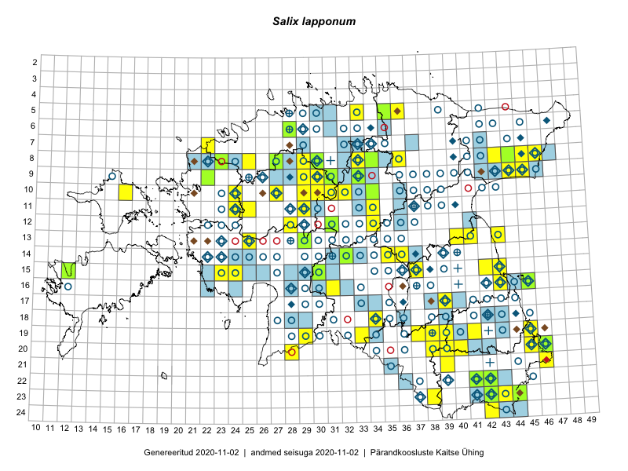

Salix lapponum — lapi paju
Salicaceae :: Salix lapponum L. (604)

Kaart põhineb 1141 kirjel:
vaatlusi 325
herbaareksemplare 279
PKÜ kirjeid1 28
ELFi kirjeid2 507
LVA kirjeid3 2
Taime kaasaegsed ja ajaloolised leiukohad asuvad 274 ruudus.
Tingmärgid ja leidudega ruutude arvud periooditi uues (u) ja 2005 andmestikus (v)
| █ | vahemik | u4 | v5 |
|---|---|---|---|
| █ | 2006–2020 | 150 | – |
| ◆/◇ | 1971–2005 | 73 | 63 |
| ○ | 1921–1970 | 188 | 127 |
| + | kuni 1920 | 15 | 0 |
| × | hävinud | – | 0 |
| ? | kaheldav | – | 1 |
| Ruut | Leidja(d) | Leiuaeg | Kirje |
|---|---|---|---|
| 09-30 | Toivo Sepp | 2020-09-16 | ELF: 24686 |
| 09-44;09-45 | Alar Soppe | 2020-08-25 | ELF: 20605 |
| 09-44 | Alar Soppe | 2020-08-25 | ELF: 20571 |
| 09-29 | Toivo Sepp | 2020-08-24 | ELF: 24975 |
| 09-29;09-30 | Toivo Sepp | 2020-08-24 | ELF: 24976 |
| 10-29 | Ott Luuk | 2020-08-24 | ruut/ala: Salix lapponum L. |
| 08-45 | Alar Soppe | 2020-08-24 | ELF: 912 |
| 09-43 | Alar Soppe | 2020-08-23 | ELF: 785 |
| 09-43 | Alar Soppe | 2020-08-23 | ELF: 24950 |
| 21-39 | Eerik Leibak | 2020-08-19 | ELF: 899 |
| 15-43 | Peedu Saar | 2020-08-08 | punkt: Salix lapponum L. |
| 23-42;23-43 | Toomas Kukk | 2020-08-06 | ELF: 336 |
| 23-42 | Toomas Kukk | 2020-08-06 | ELF: 335 |
| 22-41 | Toomas Kukk | 2020-08-05 | TAA0153955: Salix lapponum L. |
| 22-42 | Toomas Kukk | 2020-08-05 | TAA0153961: Salix lapponum L. |
| 22-41 | Toomas Kukk | 2020-08-05 | ELF: 9951 |
| 22-42 | Toomas Kukk | 2020-08-05 | ELF: 9947 |
| 22-42 | Toomas Kukk | 2020-08-05 | ELF: 10455 |
| 08-25 | Ott Luuk | 2020-07-22–2020-07-23 | ruut/ala: Salix lapponum L. |
| 08-25 | Ott Luuk | 2020-07-22 | punkt: Salix lapponum L. |
| 06-31 | Eerik Leibak | 2020-07-19 | ELF: 316 |
| 13-40 | Peedu Saar | 2020-07-14 | punkt: Salix lapponum L. |
| 23-42 | Eerik Leibak | 2020-07-09 | ELF: 9952 |
| 23-42 | Eerik Leibak | 2020-07-09 | ELF: 9953 |
| 20-45 | Toomas Kukk, Eerik Leibak | 2020-07-07 | ruut/ala: Salix lapponum L. |
| 20-46 | Toomas Kukk, Eerik Leibak | 2020-07-07 | ruut/ala: Salix lapponum L. |
| 20-46 | Toomas Kukk, Eerik Leibak | 2020-07-07 | ELF: 585 |
| 20-45;20-46 | Toomas Kukk | 2020-07-07 | ELF: 24853 |
| 20-45 | Toomas Kukk | 2020-07-07 | ELF: 2804 |
| 20-45 | Toomas Kukk | 2020-07-07 | ELF: 24857 |
| 14-24 | Silvia Pihu | 2020-07-07 | ELF: 24907 |
| 20-46 | Eerik Leibak | 2020-07-07 | ELF: 589 |
| 20-45;20-46 | Eerik Leibak | 2020-07-07 | ELF: 24854 |
| 10-24 | Margus Ellermaa | 2020-06-17 | punkt: Salix lapponum L. |
| 10-27 | Thea Kull | 2020-06-16 | punkt: Salix lapponum L. |
| 08-27 | Toomas Kukk | 2020-06-15 | PKÜ: 20463 |
| 08-27 | Rein Kalamees | 2020-06-15 | TAA0153744: Salix lapponum L. |
| 08-27 | Rein Kalamees | 2020-06-15 | PKÜ: 20485 |
| 10-24;11-24 | Tõnu Ploompuu | 2019-10-01 | ELF: 7790 |
| 11-24 | Tõnu Ploompuu | 2019-10-01 | ELF: 24799 |
| 09-44 | Ott Luuk | 2019-09-28 | punkt: Salix lapponum L. |
| 09-44 | Ott Luuk | 2019-09-28 | ruut/ala: Salix lapponum L. |
| 09-44 | Ott Luuk | 2019-09-28 | ELF: 825 |
| 09-44 | Ott Luuk | 2019-09-28 | ELF: 20592 |
| 20-46 | Peedu Saar, Ott Luuk | 2019-09-24 | ruut/ala: Salix lapponum L. |
| 20-46 | Ott Luuk, Peedu Saar | 2019-09-24 | punkt: Salix lapponum L. |
| 08-43 | Ott Luuk, Meeli Mesipuu | 2019-09-10 | ruut/ala: Salix lapponum L. |
| 08-22 | Peedu Saar | 2019-09-04 | ELF: 2892 |
| 08-21;08-22 | Peedu Saar | 2019-09-03 | ELF: 24808 |
| 08-30;09-30 | Toivo Sepp, Ott Luuk | 2019-08-30 | ELF: 934 |
| 08-30 | Ott Luuk, Toivo Sepp | 2019-08-30 | punkt: Salix lapponum L. |
| 08-30 | Ott Luuk | 2019-08-30 | TAA0150269: Salix lapponum L. |
| 08-30 | Ott Luuk | 2019-08-30 | ELF: 11335 |
| 13-29 | Thea Kull, Mari Reitalu | 2019-08-28 | punkt: Salix lapponum L. |
| 15-30 | Meeli Mesipuu, Timo Luhamäe | 2019-08-28 | punkt: Salix lapponum L. |
| 15-30 | Meeli Mesipuu, Timo Luhamäe | 2019-08-28 | TAA0149851: Salix lapponum L. |
| 15-30 | Meeli Mesipuu, Timo Luhamäe | 2019-08-28 | TAA0145351: Salix lapponum L. |
| 15-30 | Meeli Mesipuu, Timo Luhamäe | 2019-08-28 | ELF: 21515 |
| 13-29 | Mari Reitalu, Thea Kull | 2019-08-28 | ruut/ala: Salix lapponum L. |
| 12-34 | Ott Luuk, Eerik Leibak | 2019-08-27 | punkt: Salix lapponum L. |
| 11-25 | Thea Kull | 2019-08-18 | ruut/ala: Salix lapponum L. |
| 11-25 | Thea Kull | 2019-08-18 | ELF: 2937 |
| 09-22 | Peedu Saar | 2019-08-16 | ruut/ala: Salix lapponum L. |
| 09-22 | Peedu Saar | 2019-08-16 | ELF: 2188 |
| 08-33 | Ott Luuk, Jaak-Albert Metsoja | 2019-08-08 | ruut/ala: Salix lapponum L. |
| 08-33 | Ott Luuk, Jaak-Albert Metsoja | 2019-08-08 | punkt: Salix lapponum L. |
| 08-36 | Ott Luuk, Jaak-Albert Metsoja | 2019-08-05 | ruut/ala: Salix lapponum L. |
| 20-39 | Peedu Saar, Toomas Kukk | 2019-08-01 | ruut/ala: Salix lapponum L. |
| 09-31 | Ott Luuk, Toivo Sepp | 2019-07-25 | ELF: 15845 |
| 09-31;09-32 | Ott Luuk, Toivo Sepp | 2019-07-25 | ELF: 24737 |
| 07-22 | Peedu Saar | 2019-07-24 | ruut/ala: Salix lapponum L. |
| 07-22 | Peedu Saar | 2019-07-24 | ELF: 20011 |
| 11-29 | Ott Luuk, Toivo Sepp | 2019-07-23 | ELF: 1124 |
| 11-24 | Tõnu Ploompuu, Eliko Kõiv | 2019-07-20 | ELF: 212 |
| 10-24;11-24 | Tõnu Ploompuu, Eliko Kõiv | 2019-07-20 | ELF: 7789 |
| 10-24 | Tõnu Ploompuu, Eliko Kõiv | 2019-07-20 | ELF: 7801 |
| 10-24 | Tõnu Ploompuu, Eliko Kõiv | 2019-07-20 | ELF: 9869 |
| 10-24;11-24 | Tõnu Ploompuu, Eliko Kõiv | 2019-07-20 | ELF: 24787 |
| 17-39 | Thea Kull | 2019-07-12 | ruut/ala: Salix lapponum L. |
| 12-36 | Eerik Leibak | 2019-07-11 | ELF: 455 |
| 12-36 | Eerik Leibak | 2019-07-11 | ELF: 24751 |
| 19-39 | Thea Kull | 2019-07-10 | ruut/ala: Salix lapponum L. |
| 20-45 | Ott Luuk, Tiit Hallikma | 2019-07-10 | ruut/ala: Salix lapponum L. |
| 10-36;11-36 | Jaanus Paal, Elo Raspel | 2019-07-10 | ELF: 24721 |
| 05-33 | Ott Luuk, Peedu Saar | 2019-06-11 | ruut/ala: Salix lapponum L. |
| 16-45 | Ott Luuk | 2019-06-07 | TAA0150049: Salix lapponum L. |
| 08-29 | Eerik Leibak | 2019-06-06 | ELF: 21998 |
| 19-45 | Toomas Kukk, Timo Luhamäe, Eerik Leibak | 2018-08-27 | ELF: 583 |
| 19-45 | Toomas Kukk, Eerik Leibak, Timo Luhamäe | 2018-08-27 | ruut/ala: Salix lapponum L. |
| 08-22 | Tõnu Ploompuu, Priit Kukk | 2018-08-21 | ELF: 322 |
| 11-29 | Peedu Saar, Toomas Kukk, Ott Luuk, Kersti Tambets, Sten Mander | 2018-08-16 | ruut/ala: Salix lapponum L. |
| 11-29 | Ott Luuk, Toomas Kukk, Peedu Saar, Sten Mander, Kersti Tambets | 2018-08-16 | punkt: Salix lapponum L. |
| 16-43 | Peedu Saar | 2018-08-06 | ruut/ala: Salix lapponum L. |
| 16-43 | Peedu Saar | 2018-08-06 | ELF: 24451 |
| 12-28 | Indrek Tammekänd | 2018-08-02 | ELF: 24587 |
| 10-31 | Ott Luuk | 2018-08-01 | ruut/ala: Salix lapponum L. |
| 10-31 | Ott Luuk | 2018-08-01 | punkt: Salix lapponum L. |
| 15-43 | Peedu Saar | 2018-07-31 | punkt: Salix lapponum L. |
| 15-43 | Peedu Saar | 2018-07-31 | ruut/ala: Salix lapponum L. |
| 15-43 | Peedu Saar | 2018-07-31 | ELF: 2287 |
| 15-43 | Peedu Saar | 2018-07-31 | ELF: 24654 |
| 08-36 | Alar Soppe | 2018-07-27 | ELF: 1403 |
| 08-36 | Alar Soppe | 2018-07-27 | ELF: 19472 |
| 15-42 | Peedu Saar | 2018-07-20 | ruut/ala: Salix lapponum L. |
| 15-42 | Peedu Saar | 2018-07-20 | ELF: 24651 |
| 09-45 | Peedu Saar | 2018-07-19 | ruut/ala: Salix lapponum L. |
| 22-42 | Toomas Kukk | 2018-07-18 | TAA0146515: Salix lapponum L. |
| 22-42 | Toomas Kukk | 2018-07-18 | TAA0146516: Salix lapponum L. |
| 22-42;23-42 | Toomas Kukk | 2018-07-18 | ELF: 14463 |
| 08-45;09-45 | Peedu Saar | 2018-07-18 | ELF: 20617 |
| 08-45 | Peedu Saar | 2018-07-17–2018-07-18 | ruut/ala: Salix lapponum L. |
| 09-44 | Toomas Kukk | 2018-07-17 | ruut/ala: Salix lapponum L. |
| 09-44;09-45 | Toomas Kukk | 2018-07-17 | ELF: 933 |
| 09-44;09-45 | Toomas Kukk | 2018-07-17 | ELF: 24442 |
| 08-45 | Peedu Saar | 2018-07-17 | punkt: Salix lapponum L. |
| 08-45 | Peedu Saar | 2018-07-17 | ELF: 906 |
| 06-31 | Eerik Leibak | 2018-07-11 | ELF: 298 |
| 08-30 | Thea Kull | 2018-07-09 | ELF: 1058 |
| 05-33 | Alar Soppe | 2018-06-27 | ELF: 1341 |
| 07-37 | Alar Soppe | 2018-06-26 | ELF: 750 |
| 19-29 | Toomas Kukk, Ott Luuk, Kersti Tambets, Timo Luhamäe, Sten Mander | 2017-08-29 | ruut/ala: Salix lapponum L. |
| 15-37 | Meeli Mesipuu | 2017-08-22 | punkt: Salix lapponum L. |
| 15-37 | Meeli Mesipuu | 2017-08-22 | ruut/ala: Salix lapponum L. |
| 14-35 | Ott Luuk | 2017-08-16 | ruut/ala: Salix lapponum L. |
| 14-35 | Peedu Saar | 2017-08-15–2017-09-16 | ruut/ala: Salix lapponum L. |
| 14-36 | Ott Luuk | 2017-08-15 | ruut/ala: Salix lapponum L. |
| 15-37 | Peedu Saar | 2017-08-14 | punkt: Salix lapponum L. |
| 11-24 | Eerik Leibak, Toomas Kukk | 2017-08-10 | ruut/ala: Salix lapponum L. |
| 09-29 | Toomas Kukk, Ilmar Uibopuu, Kadri Kuusksalu | 2017-08-09 | ruut/ala: Salix lapponum L. |
| 15-37 | Thea Kull, Ott Luuk | 2017-08-04 | punkt: Salix lapponum L. |
| 15-37 | Peedu Saar | 2017-08-04 | punkt: Salix lapponum L. |
| 15-37 | Peedu Saar | 2017-08-03–2017-08-04 | ruut/ala: Salix lapponum L. |
| 11-34 | Thea Kull, Ott Luuk | 2017-08-03 | ruut/ala: Salix lapponum L. |
| 12-34 | Thea Kull, Ott Luuk | 2017-08-03 | punkt: Salix lapponum L. |
| 11-34 | Ott Luuk, Thea Kull | 2017-08-03 | punkt: Salix lapponum L. |
| 12-34 | Ott Luuk, Thea Kull | 2017-08-03 | punkt: Salix lapponum L. |
| 12-34 | Ott Luuk, Thea Kull | 2017-08-03 | ruut/ala: Salix lapponum L. |
| 20-38 | Peedu Saar, Ott Luuk | 2017-07-25 | punkt: Salix lapponum L. |
| 20-38 | Ott Luuk, Peedu Saar | 2017-07-25 | ruut/ala: Salix lapponum L. |
| 13-43 | Peedu Saar | 2017-07-24 | punkt: Salix lapponum L. |
| 13-43 | Peedu Saar | 2017-07-24 | ruut/ala: Salix lapponum L. |
| 20-39 | Ilmar Uibopuu | 2017-07-21–2017-07-24 | ruut/ala: Salix lapponum L. |
| 21-39 | Ilmar Uibopuu | 2017-07-14 | ruut/ala: Salix lapponum L. |
| 08-45 | Eerik Leibak | 2017-06-28 | ELF: 20753 |
| 08-45 | Eerik Leibak | 2017-06-28 | ELF: 20757 |
| 09-45 | Eerik Leibak | 2017-06-28 | ELF: 20815 |
| 09-45 | Eerik Leibak | 2017-06-28 | ELF: 20820 |
| 09-46 | Eerik Leibak | 2017-06-28 | ELF: 24495 |
| 09-45 | Eerik Leibak | 2017-06-27 | ELF: 17718 |
| 09-45 | Eerik Leibak | 2017-06-27 | ELF: 24490 |
| 20-39 | Ilmar Uibopuu | 2017-05-30 | LVA: 1734225404 |
| 10-30 | Indrek Tammekänd, Janno Tammekänd, Üllar Tammekänd, Andreas Tammekänd, Tene Johanson | 2016-08-20–2016-08-21 | ruut/ala: Salix lapponum L. |
| 23-44 | Peedu Saar, Karin Kikas | 2016-08-19 | ruut/ala: Salix lapponum L. |
| 10-16 | Meeli Mesipuu, Maret Gerz | 2016-08-09 | ruut/ala: Salix lapponum L. |
| 05-36 | Tõnu Ploompuu, Eerik Leibak | 2016-07-27 | ruut/ala: Salix lapponum L. |
| 05-35 | Peedu Saar, Liina Oja, Susanna Vain | 2016-07-27 | TAA0133985: Salix lapponum L. |
| 09-33 | Ott Luuk, Eerik Leibak | 2016-07-25 | ruut/ala: Salix lapponum L. |
| 10-31 | Toivo Sepp, Peedu Saar | 2016-07-22 | ruut/ala: Salix lapponum L. |
| 14-32 | Toomas Kukk, Liina Oja | 2016-07-21 | TAA0138160: Salix lapponum L. |
| 10-34 | Mari Metsoja, Eerik Leibak | 2016-07-21 | ruut/ala: Salix lapponum L. |
| 10-34 | Eerik Leibak, Mari Metsoja | 2016-07-21 | TAA0134189: Salix lapponum L. |
| 18-34 | Thea Kull, Indrek Tammekänd | 2016-07-19 | ruut/ala: Salix lapponum L. |
| 20-28 | Aat Sarv, Eerik Leibak | 2016-07-19 | ruut/ala: Salix lapponum L. |
| 09-29 | Toomas Kukk, Sander Laherand | 2016-07-06 | ruut/ala: Salix lapponum L. |
| 09-30 | Sander Laherand, Toomas Kukk | 2016-07-06 | ruut/ala: Salix lapponum L. |
| 13-25 | Peedu Saar, Timo Luhamäe, Johannes Kõdar | 2016-07-05 | ruut/ala: Salix lapponum L. |
| 11-29 | Thea Kull | 2016-06-23 | punkt: Salix lapponum L. |
| 09-33 | Thea Kull | 2016-06-18 | punkt: Salix lapponum L. |
| 20-40 | Tarmo Niitla, Peedu Saar | 2016-06-17 | punkt: Salix lapponum L. |
| 20-40 | Peedu Saar, Tarmo Niitla | 2016-06-17 | ruut/ala: Salix lapponum L. |
| 23-38 | Rein Kalamees, Eerik Leibak | 2016-06-16 | ruut/ala: Salix lapponum L. |
| 19-37 | Maret Gerz, Liina Oja | 2016-06-16 | ruut/ala: Salix lapponum L. |
| 23-44 | Rein Kalamees, Eerik Leibak | 2016-06-15 | ruut/ala: Salix lapponum L. |
| 23-43 | Meeli Mesipuu, Timo Luhamäe | 2016-06-15 | ruut/ala: Salix lapponum L. |
| 23-44 | Eerik Leibak, Rein Kalamees | 2016-06-15 | TAA0138348: Salix lapponum L. |
| 21-46 | Timo Luhamäe, Meeli Mesipuu | 2016-06-14 | ruut/ala: Salix lapponum L. |
| 19-38 | Timo Luhamäe, Meeli Mesipuu | 2016-06-13 | punkt: Salix lapponum L. |
| 16-43 | Rein Kalamees, Eerik Leibak | 2016-06-13 | ruut/ala: Salix lapponum L. |
| 19-38 | Meeli Mesipuu, Timo Luhamäe | 2016-06-13 | ruut/ala: Salix lapponum L. |
| 20-28 | Peedu Saar, Ott Luuk | 2016-06-09 | ruut/ala: Salix lapponum L. |
| 20-28 | Ott Luuk, Peedu Saar | 2016-06-09 | punkt: Salix lapponum L. |
| 08-29 | Thea Kull, Ott Luuk | 2016-05-30 | ruut/ala: Salix lapponum L. |
| 08-29 | Ott Luuk, Thea Kull | 2016-05-30 | punkt: Salix lapponum L. |
| 08-46 | Indrek Tammekänd | 2016-05-28–2016-05-29 | ruut/ala: Salix lapponum L. |
| 09-45 | Eerik Leibak | 2016-05-18 | ruut/ala: Salix lapponum L. |
| 10-30 | Toivo Sepp, Ott Luuk | 2015-08-21 | ruut/ala: Salix lapponum L. |
| 10-29 | Ott Luuk, Toivo Sepp | 2015-08-21 | ruut/ala: Salix lapponum L. |
| 11-29 | Ott Luuk, Toivo Sepp | 2015-08-20 | ruut/ala: Salix lapponum L. |
| 19-45 | Thea Kull, Meeli Mesipuu | 2015-08-19 | ruut/ala: Salix lapponum L. |
| 15-12 | Mari Reitalu, Oliver Parrest | 2015-08-14 | TAA0139695: Salix lapponum L. |
| 24-42 | Peedu Saar, Ott Luuk | 2015-08-13 | ruut/ala: Salix lapponum L. |
| 16-43 | Thea Kull, Meeli Mesipuu | 2015-08-12 | ruut/ala: Salix lapponum L. |
| 23-42 | Peedu Saar, Ott Luuk | 2015-08-12 | ruut/ala: Salix lapponum L. |
| 23-43 | Ott Luuk, Peedu Saar | 2015-08-12 | ruut/ala: Salix lapponum L. |
| 13-40 | Peedu Saar | 2015-08-10 | ruut/ala: Salix lapponum L. |
| 19-37 | Eeva-Maria Jeletsky, Tarmo Niitla | 2015-08-10 | ruut/ala: Salix lapponum L. |
| 10-32 | Ott Luuk | 2015-08-03–2015-08-10 | ruut/ala: Salix lapponum L. |
| 09-31 | Ott Luuk, Toivo Sepp | 2015-07-29 | ruut/ala: Salix lapponum L. |
| 09-31 | Ott Luuk | 2015-07-29 | TAA0142417: Salix lapponum L. |
| 09-45 | Peedu Saar, Liina Oja | 2015-07-24 | ruut/ala: Salix lapponum L. |
| 08-45 | Peedu Saar, Liina Oja | 2015-07-22 | ruut/ala: Salix lapponum L. |
| 08-44 | Peedu Saar, Liina Oja | 2015-07-20 | ruut/ala: Salix lapponum L. |
| 08-44 | Peedu Saar, Liina Oja | 2015-07-20 | TAA0116631: Salix lapponum L. |
| 07-22 | Anneli Palo | 2015-07-20 | LVA: 1143690268 |
| 10-24 | Hanna-Eliisa Luts, Tõnu Ploompuu, Anna-Grete Rebane | 2015-07-19 | ruut/ala: Salix lapponum L. |
| 20-46 | Rein Kalamees, Kersti Püssa | 2015-07-16 | TAA0138298: Salix lapponum L. |
| 15-12 | Mari Reitalu, Oliver Parrest | 2015-07-14 | ruut/ala: Salix lapponum L. |
| 15-12 | Mari Reitalu, Oliver Parrest | 2015-07-14 | punkt: Salix lapponum L. |
| 19-33 | Silvia Pihu | 2015-07-10–2016-06-22 | ruut/ala: Salix lapponum L. |
| 15-37 | Helle Mäemets | 2015-07-07 | ruut/ala: Salix lapponum L. |
| 15-37 | Mare Leis | 2015-07-05 | ruut/ala: Salix lapponum L. |
| 08-34 | Jana-Maria Habicht, Ester Valdvee | 2015-06-28–2015-07-26 | ruut/ala: Salix lapponum L. |
| 08-34 | Jana-Maria Habicht | 2015-06-28 | TAM0117522: Salix lapponum L. |
| 11-24 | Aat Sarv | 2015-06-24–2015-06-29 | ruut/ala: Salix lapponum L. |
| 19-41 | Vivika Väli, Ülo Väli | 2015-06-20 | ruut/ala: Salix lapponum L. |
| 11-29 | Toomas Kukk, Tiit Hallikma | 2015-06-11 | ruut/ala: Salix lapponum L. |
| 13-29 | Timo Luhamäe, Meeli Mesipuu | 2015-06-10 | punkt: Salix lapponum L. |
| 13-29 | Timo Luhamäe, Meeli Mesipuu | 2015-06-10 | punkt: Salix lapponum L. |
| 13-29 | Meeli Mesipuu, Timo Luhamäe | 2015-06-10 | ruut/ala: Salix lapponum L. |
| 13-29 | Meeli Mesipuu, Timo Luhamäe | 2015-06-10 | punkt: Salix lapponum L. |
| 13-29 | Meeli Mesipuu, Timo Luhamäe | 2015-06-10 | TAA0143896: Salix lapponum L. |
| 12-31 | Ott Luuk, Hannes Pehlak | 2015-06-09 | ruut/ala: Salix lapponum L. |
| 12-31 | Ott Luuk, Hannes Pehlak | 2015-06-09 | TAA0146028: Salix lapponum L. |
| 16-31 | Indrek Tammekänd | 2015-06-02 | ruut/ala: Salix lapponum L. |
| 15-24 | Indrek Tammekänd, Liisa Rennel, Agu Leivits, Hannes Pehlak, Irja Tammekänd | 2015-04-27–2015-08-02 | ruut/ala: Salix lapponum L. |
| 15-23 | Indrek Tammekänd | 2015-04-06–2015-07-15 | ruut/ala: Salix lapponum L. |
| 12-28 | Indrek Tammekänd | 2014-09-17 | ruut/ala: Salix lapponum L. |
| 09-22 | Ott Luuk, Peedu Saar, Maret Gerz | 2014-08-21–2014-08-22 | ruut/ala: Salix lapponum L. |
| 09-33 | Peedu Saar, Ott Luuk | 2014-08-05 | ruut/ala: Salix lapponum L. |
| 09-42;09-43 | Eerik Leibak | 2013-06-06 | ELF: 23818 |
| 08-45 | Agu Leivits | 2013-06-06 | punkt: Salix lapponum L. |
| 16-44 | Peedu Saar | 2012-10-19 | ELF: 23925 |
| 16-44 | Peedu Saar | 2012-10-19 | ELF: 23927 |
| 16-44 | Peedu Saar | 2012-10-19 | ELF: 23928 |
| 15-37 | Peedu Saar | 2012-09-09 | ELF: 23537 |
| 15-37 | Peedu Saar | 2012-09-09 | ELF: 23540 |
| 15-37 | Peedu Saar | 2012-09-09 | ELF: 23538 |
| 15-43;16-43 | Peedu Saar | 2012-09-05 | ELF: 5063 |
| 15-43 | Peedu Saar | 2012-09-05 | ELF: 23911 |
| 08-45 | Alar Soppe | 2012-08-29 | ELF: 23433 |
| 08-45;09-45 | Alar Soppe | 2012-08-29 | ELF: 20617 |
| 08-22 | Eerik Leibak | 2012-08-20 | ELF: 23532 |
| 09-27 | Eerik Leibak | 2012-08-18 | ELF: 22000 |
| 09-31 | Toivo Sepp | 2012-08-17 | ELF: 23855 |
| 09-30;09-31 | Toivo Sepp | 2012-08-17 | ELF: 23453 |
| 09-30 | Toivo Sepp | 2012-08-17 | ELF: 23853 |
| 09-30 | Toivo Sepp | 2012-08-17 | ELF: 23854 |
| 09-30 | Toivo Sepp | 2012-08-16 | ELF: 1079 |
| 09-30 | Toivo Sepp | 2012-08-16 | ELF: 23849 |
| 09-30 | Toivo Sepp | 2012-08-15 | ELF: 22976 |
| 09-30 | Toivo Sepp | 2012-08-15 | ELF: 2462 |
| 08-30 | Toivo Sepp | 2012-08-14 | ELF: 1058 |
| 11-29 | Toivo Sepp, Monika Suškevics | 2012-08-12 | ELF: 23466 |
| 11-29 | Toivo Sepp, Monika Suškevics | 2012-08-12 | ELF: 23842 |
| 10-32 | Toivo Sepp | 2012-08-10 | ELF: 22979 |
| 10-32 | Toivo Sepp | 2012-08-10 | ELF: 22980 |
| 13-29 | Indrek Tammekänd | 2012-08-10 | ELF: 23474 |
| 13-25 | Indrek Tammekänd | 2012-08-07 | ELF: 23938 |
| 08-24 | Eerik Leibak | 2012-08-02 | ELF: 23810 |
| 09-44 | Alar Soppe | 2012-07-26 | ELF: 23009 |
| 09-42;09-43 | Alar Soppe | 2012-07-26 | ELF: 23818 |
| 09-44 | Alar Soppe | 2012-07-24 | ELF: 23007 |
| 19-45 | Eerik Leibak | 2012-07-21 | ELF: 23791 |
| 19-45 | Eerik Leibak | 2012-07-21 | ELF: 23792 |
| 19-45 | Eerik Leibak | 2012-07-21 | ELF: 23793 |
| 08-43;08-44 | Alar Soppe | 2012-07-20 | ELF: 2435 |
| 08-44 | Alar Soppe | 2012-07-20 | ELF: 23010 |
| 22-42 | Eerik Leibak | 2012-07-18 | ELF: 391 |
| 10-24 | Toomas Kukk, Timo Luhamäe | 2012-07-12 | punkt: Salix lapponum L. |
| 08-22 | Mari Reitalu, Eerik Leibak | 2012-07-08 | ELF: 23785 |
| 08-22 | Mari Reitalu, Eerik Leibak | 2012-07-08 | ELF: 21089 |
| 12-31 | Toivo Sepp | 2012-06-28 | ELF: 23463 |
| 11-33 | Eerik Leibak | 2012-06-22 | ELF: 23470 |
| 08-43;09-43 | Alar Soppe | 2012-06-20 | ELF: 775 |
| 09-43 | Alar Soppe | 2012-06-20 | ELF: 23413 |
| 08-23 | Peedu Saar | 2012-06-02 | TAA0116755: Salix lapponum L. |
| 18-29 | Indrek Tammekänd | 2011-08-14 | ELF: 23103 |
| 19-45 | Jaanus Paal | 2011-07-05 | ELF: 23311 |
| 19-45 | Jaanus Paal | 2011-07-05 | ELF: 23311 |
| 19-45 | Jaanus Paal | 2011-07-05 | ELF: 23314 |
| 19-45 | Jaanus Paal | 2011-07-05 | ELF: 23314 |
| 19-45 | Jaanus Paal | 2011-07-05 | ELF: 23312 |
| 19-45 | Jaanus Paal | 2011-07-05 | ELF: 23312 |
| 19-45 | Jaanus Paal | 2011-07-05 | ELF: 23312 |
| 19-45 | Jaanus Paal | 2011-07-05 | ELF: 23313 |
| 19-45 | Jaanus Paal | 2011-07-05 | ELF: 23313 |
| 19-45 | Jaanus Paal | 2011-07-05 | ELF: 23315 |
| 19-45 | Jaanus Paal | 2011-07-05 | ELF: 23315 |
| 15-24 | Indrek Tammekänd | 2011-06-25 | ELF: 2549 |
| 15-22;16-22 | Marika Kose | 2010-11-20 | ELF: 21691 |
| 13-29 | Toomas Kukk | 2010-11-01 | ELF: 2531 |
| 13-25 | Maria Knüpffer | 2010-10-13 | ELF: 21785 |
| 16-43 | Eerik Leibak | 2010-10-06 | ELF: 22152 |
| 17-33 | Toivo Sepp | 2010-10-02 | ELF: 22362 |
| 09-33 | Indrek Hiiesalu | 2010-10-01 | ELF: 18962 |
| 17-34 | Toivo Sepp | 2010-09-29 | ELF: 22345 |
| 08-27 | Arne Kivistik | 2010-09-27 | ELF: 15894 |
| 10-33 | Indrek Hiiesalu, Liina Remm | 2010-09-26 | ELF: 18967 |
| 09-33;09-34 | Indrek Hiiesalu | 2010-09-26 | ELF: 18966 |
| 09-33 | Indrek Hiiesalu | 2010-09-26 | ELF: 18983 |
| 13-43 | Meelis Sepp | 2010-09-24 | ELF: 2003 |
| 18-34 | Alar Soppe | 2010-09-24 | ELF: 19208 |
| 09-33 | Indrek Hiiesalu | 2010-09-19 | ELF: 18979 |
| 09-33 | Indrek Hiiesalu | 2010-09-18 | ELF: 18974 |
| 09-28 | Toivo Sepp | 2010-09-16 | ELF: 20532 |
| 16-24 | Indrek Tammekänd | 2010-09-16 | ELF: 21598 |
| 14-31 | Maria Knüpffer | 2010-09-15 | ELF: 21555 |
| 09-33 | Indrek Hiiesalu | 2010-09-12 | ELF: 18972 |
| 21-46 | Silver Sisask | 2010-09-11 | ELF: 21883 |
| 21-46 | Silver Sisask | 2010-09-10 | ELF: 21868 |
| 21-46 | Silver Sisask | 2010-09-10 | ELF: 21877 |
| 08-33 | Indrek Hiiesalu | 2010-09-08 | ELF: 19004 |
| 08-33 | Indrek Hiiesalu | 2010-09-08 | ELF: 19006 |
| 09-31 | Arne Kivistik | 2010-09-08 | ELF: 15841 |
| 09-31 | Arne Kivistik | 2010-09-08 | ELF: 15843 |
| 09-31;09-32 | Arne Kivistik | 2010-09-08 | ELF: 15845 |
| 18-28 | Indrek Tammekänd | 2010-09-06 | ELF: 21486 |
| 09-33 | Indrek Hiiesalu | 2010-09-06 | ELF: 18957 |
| 09-33 | Indrek Hiiesalu | 2010-09-06 | ELF: 18958 |
| 09-33 | Indrek Hiiesalu | 2010-09-05 | ELF: 18988 |
| 09-33 | Indrek Hiiesalu | 2010-09-05 | ELF: 18989 |
| 09-33 | Indrek Hiiesalu | 2010-09-05 | ELF: 18990 |
| 08-33 | Indrek Hiiesalu | 2010-09-01 | ELF: 18997 |
| 08-33 | Indrek Hiiesalu | 2010-09-01 | ELF: 19000 |
| 08-33 | Indrek Hiiesalu | 2010-09-01 | ELF: 9790 |
| 09-31 | Arne Kivistik | 2010-08-31 | ELF: 15839 |
| 09-33 | Indrek Hiiesalu | 2010-08-30 | ELF: 2982 |
| 08-22 | Liis Multer, Kuldar Pärn | 2010-08-26 | ELF: 21096 |
| 08-22 | Liis Multer, Kuldar Pärn | 2010-08-26 | ELF: 21098 |
| 22-42 | Meelis Sepp | 2010-08-25 | ELF: 15183 |
| 22-42 | Meelis Sepp | 2010-08-25 | ELF: 15184 |
| 05-33 | Silver Sisask | 2010-08-23 | ELF: 21924 |
| 16-32 | Maria Knüpffer | 2010-08-23 | ELF: 2681 |
| 14-31;15-31 | Eike Vunk | 2010-08-22 | ELF: 22414 |
| 05-33 | Silver Sisask | 2010-08-21 | ELF: 21901 |
| 09-33 | Indrek Hiiesalu | 2010-08-21 | ELF: 18949 |
| 08-33 | Indrek Hiiesalu | 2010-08-20 | ELF: 18944 |
| 08-33 | Indrek Hiiesalu | 2010-08-20 | ELF: 18945 |
| 08-33;09-33 | Indrek Hiiesalu | 2010-08-20 | ELF: 18946 |
| 06-35 | Tõnu Laasi | 2010-08-19 | ELF: 15344 |
| 06-35 | Tõnu Laasi | 2010-08-19 | ELF: 15345 |
| 10-30 | Toivo Sepp | 2010-08-19 | ELF: 20492 |
| 10-30;10-31 | Toivo Sepp | 2010-08-19 | ELF: 20498 |
| 08-23 | Liis Multer, Kuldar Pärn | 2010-08-19 | ELF: 21120 |
| 10-30 | Toivo Sepp | 2010-08-18 | ELF: 20488 |
| 10-30 | Toivo Sepp | 2010-08-18 | ELF: 20489 |
| 08-29;09-29 | Silver Sisask, Robert Laanpere | 2010-08-18 | ELF: 22930 |
| 09-29 | Silver Sisask, Robert Laanpere | 2010-08-18 | ELF: 22936 |
| 09-29 | Silver Sisask, Robert Laanpere | 2010-08-18 | ELF: 22937 |
| 09-29 | Silver Sisask, Robert Laanpere | 2010-08-18 | ELF: 22938 |
| 09-29 | Silver Sisask, Robert Laanpere | 2010-08-18 | ELF: 22939 |
| 08-21;08-22 | Liis Multer, Kuldar Pärn | 2010-08-18 | ELF: 23529 |
| 09-33 | Indrek Hiiesalu | 2010-08-18 | ELF: 18950 |
| 09-32;09-33 | Indrek Hiiesalu | 2010-08-18 | ELF: 18951 |
| 09-32 | Indrek Hiiesalu | 2010-08-18 | ELF: 18952 |
| 09-33 | Indrek Hiiesalu | 2010-08-18 | ELF: 2893 |
| 09-30;10-30 | Toivo Sepp | 2010-08-17 | ELF: 20482 |
| 10-30 | Toivo Sepp | 2010-08-17 | ELF: 20486 |
| 10-30 | Toivo Sepp | 2010-08-17 | ELF: 20487 |
| 09-33 | Indrek Hiiesalu | 2010-08-17 | ELF: 18938 |
| 09-33 | Indrek Hiiesalu | 2010-08-17 | ELF: 18939 |
| 09-30 | Toivo Sepp | 2010-08-16 | ELF: 20477 |
| 09-30 | Toivo Sepp | 2010-08-16 | ELF: 20478 |
| 19-34 | Maria Knüpffer | 2010-08-16 | ELF: 2750 |
| 23-42 | Daniel Savka, Ardo Aamer | 2010-08-16 | ELF: 17529 |
| 09-32;09-33 | Indrek Hiiesalu | 2010-08-15 | ELF: 18930 |
| 23-42 | Daniel Savka, Ardo Aamer | 2010-08-15 | ELF: 2737 |
| 08-32;08-33 | Indrek Hiiesalu | 2010-08-14 | ELF: 18923 |
| 09-32;09-33 | Indrek Hiiesalu | 2010-08-14 | ELF: 18926 |
| 08-33;09-33 | Indrek Hiiesalu | 2010-08-14 | ELF: 18927 |
| 08-32;08-33;09-32;09-33 | Indrek Hiiesalu | 2010-08-14 | ELF: 18928 |
| 08-46 | Helle Kaasik, Marko Kaasik | 2010-08-14 | ELF: 20784 |
| 09-30 | Toivo Sepp | 2010-08-13 | ELF: 20475 |
| 09-30 | Toivo Sepp | 2010-08-13 | ELF: 20476 |
| 08-32 | Indrek Hiiesalu | 2010-08-13 | ELF: 18918 |
| 23-42 | Daniel Savka, Ardo Aamer | 2010-08-13 | ELF: 17486 |
| 23-42 | Daniel Savka, Ardo Aamer | 2010-08-13 | ELF: 17488 |
| 23-42 | Daniel Savka, Ardo Aamer | 2010-08-13 | ELF: 17495 |
| 23-42 | Daniel Savka, Ardo Aamer | 2010-08-13 | ELF: 17497 |
| 08-29 | Silver Sisask, Robert Laanpere | 2010-08-12 | ELF: 22914 |
| 08-29 | Silver Sisask, Robert Laanpere | 2010-08-12 | ELF: 22916 |
| 08-29 | Silver Sisask, Robert Laanpere | 2010-08-12 | ELF: 22917 |
| 09-29 | Silver Sisask, Robert Laanpere | 2010-08-12 | ELF: 22921 |
| 08-29;09-29 | Silver Sisask, Robert Laanpere | 2010-08-12 | ELF: 22923 |
| 08-32 | Indrek Hiiesalu | 2010-08-12 | ELF: 18914 |
| 08-32 | Indrek Hiiesalu | 2010-08-12 | ELF: 18915 |
| 08-32 | Indrek Hiiesalu | 2010-08-12 | ELF: 18916 |
| 23-42 | Daniel Savka, Ardo Aamer | 2010-08-12 | ELF: 17482 |
| 08-29 | Silver Sisask, Robert Laanpere | 2010-08-11 | ELF: 21994 |
| 08-32 | Indrek Hiiesalu | 2010-08-11 | ELF: 2202 |
| 08-29 | Silver Sisask, Robert Laanpere | 2010-08-10 | ELF: 21989 |
| 08-29 | Silver Sisask, Robert Laanpere | 2010-08-10 | ELF: 21990 |
| 08-29 | Silver Sisask, Robert Laanpere | 2010-08-10 | ELF: 21992 |
| 09-31 | Toivo Sepp | 2010-08-06 | ELF: 20470 |
| 09-31;10-31 | Toivo Sepp | 2010-08-06 | ELF: 20471 |
| 10-30;10-31 | Toivo Sepp | 2010-08-06 | ELF: 20490 |
| 08-22;08-23 | Liis Multer, Kuldar Pärn | 2010-08-06 | ELF: 21113 |
| 08-22;08-23 | Liis Multer, Kuldar Pärn | 2010-08-06 | ELF: 21114 |
| 08-23 | Liis Multer, Kuldar Pärn | 2010-08-06 | ELF: 21117 |
| 09-31 | Toivo Sepp | 2010-08-05 | ELF: 20464 |
| 09-31 | Toivo Sepp | 2010-08-05 | ELF: 20465 |
| 09-30;09-31 | Toivo Sepp | 2010-08-05 | ELF: 20469 |
| 08-30 | Silver Sisask, Robert Laanpere | 2010-08-04 | ELF: 22892 |
| 08-30 | Silver Sisask, Robert Laanpere | 2010-08-04 | ELF: 22896 |
| 22-41 | Meelis Sepp | 2010-08-04 | ELF: 16955 |
| 22-42 | Meelis Sepp | 2010-08-04 | ELF: 16962 |
| 08-23 | Liis Multer, Kuldar Pärn | 2010-08-04 | ELF: 21075 |
| 08-29 | Silver Sisask, Robert Laanpere | 2010-08-03 | ELF: 21971 |
| 15-37 | Jaanus Paal, Eerik Leibak | 2010-08-03 | ELF: 22142 |
| 10-34 | Indrek Hiiesalu | 2010-08-03 | ELF: 18839 |
| 21-35 | Alar Soppe | 2010-08-03 | ELF: 2290 |
| 22-41 | Meelis Sepp | 2010-08-02 | ELF: 16931 |
| 09-46 | Marko Kaasik | 2010-07-31 | ELF: 20870 |
| 08-33 | Indrek Hiiesalu | 2010-07-31 | ELF: 18897 |
| 08-33 | Indrek Hiiesalu | 2010-07-31 | ELF: 18907 |
| 08-33 | Indrek Hiiesalu | 2010-07-31 | ELF: 18908 |
| 09-46 | Helle Kaasik, Laila Kaasik | 2010-07-31 | ELF: 20873 |
| 22-36 | Riinu Ots | 2010-07-27 | ELF: 20120 |
| 14-24 | Maria Knüpffer, Mariliis Võsu, Alina Gorecky, Julia Koblitzek | 2010-07-27 | ELF: 21794 |
| 14-24;14-25 | Indrek Tammekänd | 2010-07-27 | ELF: 21570 |
| 14-24 | Indrek Tammekänd | 2010-07-27 | ELF: 21573 |
| 14-24;14-25;15-25 | Indrek Tammekänd | 2010-07-27 | ELF: 21576 |
| 14-33 | Triin Tekko | 2010-07-26 | ELF: 19375 |
| 08-45 | Alar Soppe | 2010-07-21 | ELF: 17702 |
| 09-45 | Alar Soppe | 2010-07-21 | ELF: 17731 |
| 09-46 | Marko Kaasik | 2010-07-20 | ELF: 20851 |
| 07-33 | Indrek Hiiesalu | 2010-07-20 | ELF: 18863 |
| 09-46 | Helle Kaasik, Laila Kaasik | 2010-07-20 | ELF: 20861 |
| 23-43 | Jaanus Paal | 2010-07-19 | ELF: 14149 |
| 08-33 | Indrek Hiiesalu | 2010-07-15 | ELF: 14445 |
| 08-33 | Indrek Hiiesalu | 2010-07-14 | ELF: 14430 |
| 22-41 | Meelis Sepp | 2010-07-13 | ELF: 18452 |
| 18-36 | Alar Soppe | 2010-07-12 | ELF: 18006 |
| 07-32 | Indrek Hiiesalu | 2010-07-11 | ELF: 11496 |
| 09-46 | Helle Kaasik, Laila Kaasik, Aage Raud | 2010-07-11 | ELF: 20841 |
| 09-31 | Toivo Sepp | 2010-07-10 | ELF: 20463 |
| 09-45;09-46 | Helle Kaasik, Laila Kaasik, Aage Raud | 2010-07-10 | ELF: 20830 |
| 09-45;09-46 | Helle Kaasik, Laila Kaasik, Aage Raud | 2010-07-10 | ELF: 20832 |
| 09-45;09-46 | Helle Kaasik, Laila Kaasik, Aage Raud | 2010-07-10 | ELF: 20835 |
| 09-30 | Toivo Sepp | 2010-07-08 | ELF: 2270 |
| 09-30 | Toivo Sepp | 2010-07-08 | ELF: 20454 |
| 09-30 | Toivo Sepp | 2010-07-08 | ELF: 20456 |
| 09-30 | Toivo Sepp | 2010-07-08 | ELF: 20457 |
| 09-30 | Toivo Sepp | 2010-07-08 | ELF: 20459 |
| 09-30 | Toivo Sepp | 2010-07-08 | ELF: 20460 |
| 09-30 | Toivo Sepp | 2010-07-08 | ELF: 20462 |
| 10-32 | Helen Liiva, Mari Uudelt | 2010-07-08 | ELF: 14521 |
| 08-35 | Anne Palm | 2010-07-08 | ELF: 14780 |
| 09-30 | Toivo Sepp | 2010-07-07 | ELF: 20452 |
| 07-33;08-33 | Indrek Hiiesalu | 2010-07-06 | ELF: 14424 |
| 09-45 | Helle Kaasik, Marko Kaasik, Laila Kaasik | 2010-07-04 | ELF: 20823 |
| 09-45 | Helle Kaasik, Marko Kaasik, Laila Kaasik | 2010-07-04 | ELF: 20824 |
| 09-45 | Helle Kaasik, Marko Kaasik, Laila Kaasik | 2010-07-04 | ELF: 20827 |
| 23-42;23-43 | Daniel Savka, Ardo Aamer | 2010-07-04 | ELF: 14752 |
| 13-29 | Reet Merenäkk, Luule Linamäe, Meeli Jänes | 2010-07-03 | ELF: 20738 |
| 09-45 | Helle Kaasik, Marko Kaasik, Laila Kaasik | 2010-07-03 | ELF: 20812 |
| 09-45 | Helle Kaasik, Marko Kaasik, Laila Kaasik | 2010-07-03 | ELF: 20813 |
| 09-45 | Helle Kaasik, Marko Kaasik, Laila Kaasik | 2010-07-03 | ELF: 20814 |
| 09-45 | Helle Kaasik, Marko Kaasik, Laila Kaasik | 2010-07-03 | ELF: 20815 |
| 09-45 | Helle Kaasik, Marko Kaasik, Laila Kaasik | 2010-07-03 | ELF: 20817 |
| 23-42 | Daniel Savka, Ardo Aamer | 2010-07-02 | ELF: 17435 |
| 23-43 | Daniel Savka, Ardo Aamer | 2010-07-02 | ELF: 17437 |
| 23-43 | Daniel Savka, Ardo Aamer | 2010-07-02 | ELF: 17444 |
| 23-43 | Daniel Savka, Ardo Aamer | 2010-07-02 | ELF: 17445 |
| 09-30 | Toivo Sepp | 2010-07-01 | ELF: 20440 |
| 08-30;09-30 | Toivo Sepp | 2010-07-01 | ELF: 20446 |
| 09-45 | Alar Soppe | 2010-07-01 | ELF: 17713 |
| 09-45 | Alar Soppe | 2010-07-01 | ELF: 17714 |
| 09-45 | Alar Soppe | 2010-07-01 | ELF: 17715 |
| 09-45 | Alar Soppe | 2010-07-01 | ELF: 17716 |
| 09-45 | Alar Soppe | 2010-07-01 | ELF: 17717 |
| 09-45 | Alar Soppe | 2010-07-01 | ELF: 17718 |
| 09-30 | Toivo Sepp | 2010-06-30 | ELF: 20435 |
| 09-30 | Toivo Sepp | 2010-06-30 | ELF: 20436 |
| 08-29 | Silver Sisask, Robert Laanpere | 2010-06-30 | ELF: 21964 |
| 15-30 | Maria Knüpffer | 2010-06-30 | ELF: 21513 |
| 19-39 | Margit Turb, Tarmo Evestus | 2010-06-30 | ELF: 20089 |
| 23-41 | Meelis Sepp | 2010-06-29 | ELF: 18438 |
| 07-33 | Indrek Hiiesalu | 2010-06-29 | ELF: 14412 |
| 23-42 | Daniel Savka, Ardo Aamer | 2010-06-29 | ELF: 17422 |
| 09-29;09-30 | Toivo Sepp | 2010-06-28 | ELF: 20429 |
| 09-29;09-30 | Toivo Sepp | 2010-06-28 | ELF: 20432 |
| 23-44 | Jaanus Paal | 2010-06-28 | ELF: 14261 |
| 23-44;24-44 | Jaanus Paal | 2010-06-28 | ELF: 14280 |
| 23-44 | Jaanus Paal | 2010-06-28 | ELF: 14284 |
| 23-44 | Jaanus Paal | 2010-06-28 | ELF: 14286 |
| 07-29 | Egle Puusepp, Liis Multer | 2010-06-28 | ELF: 14359 |
| 23-42 | Daniel Savka, Ardo Aamer | 2010-06-28 | ELF: 17406 |
| 17-40 | Silvia Pihu | 2010-06-27 | ELF: 15102 |
| 22-41;23-41 | Meelis Sepp, Liis Kuresoo | 2010-06-27 | ELF: 18420 |
| 18-34 | Toivo Sepp | 2010-06-26 | ELF: 22305 |
| 23-41 | Meelis Sepp, Liis Kuresoo | 2010-06-26 | ELF: 18404 |
| 09-29;09-30 | Toivo Sepp | 2010-06-25 | ELF: 20428 |
| 10-31 | Toivo Sepp | 2010-06-23 | ELF: 20423 |
| 10-31 | Toivo Sepp | 2010-06-22 | ELF: 20417 |
| 10-31 | Toivo Sepp | 2010-06-21 | ELF: 20416 |
| 06-35 | Tõnu Laasi | 2010-06-18 | ELF: 15339 |
| 13-40;13-41 | Peedu Saar | 2010-06-18 | ELF: 18594 |
| 13-40 | Peedu Saar | 2010-06-18 | ELF: 18595 |
| 23-43 | Jaanus Paal | 2010-06-18 | ELF: 14192 |
| 13-40;13-41 | Peedu Saar | 2010-06-17 | ELF: 449 |
| 14-35;14-36 | Eerik Leibak | 2010-06-17 | ELF: 22036 |
| 14-35 | Eerik Leibak | 2010-06-17 | ELF: 22037 |
| 14-35 | Eerik Leibak | 2010-06-17 | ELF: 22039 |
| 10-30 | Toivo Sepp | 2010-06-16 | ELF: 20410 |
| 10-30 | Toivo Sepp | 2010-06-16 | ELF: 20411 |
| 24-43 | Jaanus Paal | 2010-06-16 | ELF: 14308 |
| 23-43 | Daniel Savka, Ardo Aamer | 2010-06-15 | ELF: 17382 |
| 23-43 | Daniel Savka, Ardo Aamer | 2010-06-15 | ELF: 17385 |
| 23-43 | Daniel Savka, Ardo Aamer | 2010-06-15 | ELF: 17388 |
| 22-43 | Daniel Savka, Ardo Aamer | 2010-06-14 | ELF: 17359 |
| 22-42 | Daniel Savka, Ardo Aamer | 2010-06-14 | ELF: 17368 |
| 09-46 | Helle Kaasik, Marko Kaasik | 2010-06-13 | ELF: 20782 |
| 08-45 | Helle Kaasik, Marko Kaasik | 2010-06-12 | ELF: 20757 |
| 15-37 | Ülo Väli | 2010-06-11 | ELF: 13923 |
| 15-37 | Ülo Väli | 2010-06-11 | ELF: 22120 |
| 13-40;13-41 | Peedu Saar | 2010-06-11 | ELF: 2157 |
| 23-43 | Jaanus Paal | 2010-06-11 | ELF: 14148 |
| 23-43 | Jaanus Paal | 2010-06-11 | ELF: 14152 |
| 23-43 | Jaanus Paal | 2010-06-11 | ELF: 14153 |
| 14-36 | Indrek Tammekänd | 2010-06-11 | ELF: 2959 |
| 23-43 | Jaanus Paal | 2010-06-10 | ELF: 14143 |
| 15-37 | Indrek Tammekänd | 2010-06-10 | ELF: 22096 |
| 15-37 | Indrek Tammekänd | 2010-06-10 | ELF: 22098 |
| 15-37 | Eerik Leibak | 2010-06-10 | ELF: 22117 |
| 23-43 | Jaanus Paal | 2010-06-09 | ELF: 14131 |
| 23-43 | Jaanus Paal | 2010-06-09 | ELF: 14142 |
| 15-37 | Jaak Tammekänd | 2010-06-09 | ELF: 22081 |
| 15-37 | Indrek Tammekänd | 2010-06-09 | ELF: 22116 |
| 15-37 | Eerik Leibak, Jaak Tammekänd | 2010-06-09 | ELF: 22085 |
| 15-37 | Eerik Leibak | 2010-06-09 | ELF: 22086 |
| 14-37;15-37 | Alar Soppe | 2010-06-09 | ELF: 22070 |
| 10-30 | Toivo Sepp | 2010-06-05 | ELF: 20395 |
| 10-30 | Toivo Sepp | 2010-06-05 | ELF: 20398 |
| 12-41 | Peedu Saar | 2010-06-03 | ELF: 18543 |
| 22-42 | Meelis Sepp, Liis Kuresoo | 2010-06-03 | ELF: 2945 |
| 22-42 | Meelis Sepp, Liis Kuresoo | 2010-06-03 | ELF: 10450 |
| 22-42 | Meelis Sepp, Liis Kuresoo | 2010-06-03 | ELF: 10451 |
| 22-42 | Meelis Sepp, Liis Kuresoo | 2010-06-03 | ELF: 10452 |
| 22-42 | Meelis Sepp, Liis Kuresoo | 2010-06-03 | ELF: 10455 |
| 22-42 | Meelis Sepp, Liis Kuresoo | 2010-06-03 | ELF: 10456 |
| 22-42 | Meelis Sepp, Liis Kuresoo | 2010-06-03 | ELF: 10464 |
| 22-42 | Meelis Sepp, Liis Kuresoo | 2010-06-02 | ELF: 10430 |
| 22-42 | Meelis Sepp, Liis Kuresoo | 2010-06-02 | ELF: 10435 |
| 22-42 | Meelis Sepp, Liis Kuresoo | 2010-06-02 | ELF: 10437 |
| 14-37;15-37 | Alar Soppe | 2010-06-02 | ELF: 22080 |
| 11-30 | Toivo Sepp | 2010-05-31 | ELF: 20379 |
| 14-25;15-25 | Indrek Tammekänd, Jaak Tammekänd, Üllar Tammekänd | 2010-05-31 | ELF: 21588 |
| 09-46 | Helle Kaasik, Marko Kaasik | 2010-05-30 | ELF: 20777 |
| 11-30 | Toivo Sepp | 2010-05-29 | ELF: 20377 |
| 11-29 | Thea Kull | 2010 | punkt: Salix lapponum L. |
| 09-33 | Thea Kull | 2010 | punkt: Salix lapponum L. |
| 05-36 | Jaan Spiegel | 2009-09-22 | ELF: 3081 |
| 16-28 | Indrek Tammekänd | 2009-09-10 | ELF: 13840 |
| 16-28 | Indrek Tammekänd | 2009-09-02 | ELF: 13819 |
| 08-24 | Eerik Leibak | 2009-09-02 | ELF: 11776 |
| 15-26 | Maire Akkermann | 2009-08-20 | ELF: 11426 |
| 22-42 | Kai Koppel | 2009-08-20 | ELF: 11397 |
| 22-42 | Kai Koppel | 2009-08-20 | ELF: 11400 |
| 11-29 | Toivo Sepp | 2009-08-19 | ELF: 10302 |
| 08-42;09-42 | Marko Kaasik, Laila Kaasik, Helle Kaasik | 2009-08-09 | ELF: 10584 |
| 10-30 | Toivo Sepp | 2009-08-03 | ELF: 12997 |
| 15-29 | Indrek Tammekänd | 2009-07-25 | ELF: 13817 |
| 23-44 | Jaanus Paal | 2009-07-23 | ELF: 12373 |
| 23-43 | Jaanus Paal | 2009-07-21 | ELF: 12393 |
| 23-43 | Jaanus Paal | 2009-07-20 | ELF: 12410 |
| 23-43 | Jaanus Paal | 2009-07-20 | ELF: 12413 |
| 10-29 | Toivo Sepp | 2009-07-19 | ELF: 12982 |
| 10-29 | Toivo Sepp | 2009-07-19 | ELF: 12983 |
| 23-43 | Jaanus Paal | 2009-07-19 | ELF: 12453 |
| 10-29 | Toivo Sepp | 2009-07-18 | ELF: 12980 |
| 10-30 | Toivo Sepp | 2009-07-17 | ELF: 12979 |
| 10-30;11-30 | Toivo Sepp | 2009-07-15 | ELF: 12976 |
| 10-30 | Toivo Sepp | 2009-07-15 | ELF: 12977 |
| 08-30 | Johannes Vind | 2009-07-15 | ELF: 11343 |
| 08-30 | Johannes Vind | 2009-07-15 | ELF: 11344 |
| 23-43 | Jaanus Paal | 2009-07-15 | ELF: 12496 |
| 11-29 | Toivo Sepp | 2009-07-14 | ELF: 12974 |
| 23-43 | Jaanus Paal | 2009-07-14 | ELF: 12502 |
| 23-43 | Jaanus Paal | 2009-07-14 | ELF: 12504 |
| 23-43 | Jaanus Paal | 2009-07-14 | ELF: 12507 |
| 11-30 | Toivo Sepp | 2009-07-12 | ELF: 12973 |
| 08-27;08-28 | Aat Sarv | 2009-07-12 | ELF: 13059 |
| 11-30 | Toivo Sepp | 2009-07-11 | ELF: 12971 |
| 08-30 | Johannes Vind | 2009-07-10 | ELF: 11331 |
| 07-42;08-42 | Helle Kaasik, Marko Kaasik | 2009-07-09 | ELF: 2144 |
| 20-41 | Kai Koppel | 2009-07-07 | ELF: 11359 |
| 09-30 | Johannes Vind | 2009-07-04 | ELF: 11324 |
| 19-40 | Maris Kelner | 2009-07-02 | ELF: 11515 |
| 15-31 | Meelis Leivits | 2009-06-30 | ELF: 13254 |
| 19-43 | Heidi Öövel, Tõnu Laasi, Mihkel Tiido | 2009-06-30 | ELF: 12702 |
| 05-30 | Eerik Leibak | 2009-06-30 | ELF: 13586 |
| 15-28;16-28 | Indrek Tammekänd | 2009-06-29 | ELF: 13826 |
| 16-28 | Indrek Tammekänd | 2009-06-29 | ELF: 13827 |
| 08-23 | Eerik Leibak | 2009-06-28 | ELF: 11763 |
| 16-30 | Eike Vunk, Indrek Tammekänd | 2009-06-26 | ELF: 13815 |
| 05-31 | Eerik Leibak | 2009-06-23 | ELF: 13594 |
| 20-42 | Kai Koppel | 2009-06-22 | ELF: 11350 |
| 08-34 | Indrek Hiiesalu, Maireet Müür | 2009-06-21 | ELF: 14401 |
| 17-38 | Marko Kaasik, Helle Kaasik | 2009-06-18 | ELF: 10619 |
| 18-43 | Heidi Öövel, Mihkel Tiido, Tõnu Laasi | 2009-06-18 | ELF: 12690 |
| 18-42 | Heidi Öövel, Mihkel Tiido, Tõnu Laasi | 2009-06-18 | ELF: 12693 |
| 18-42;18-43 | Mihkel Tiido, Tõnu Laasi | 2009-06-17 | ELF: 12685 |
| 18-42;18-43 | Mihkel Tiido, Tõnu Laasi | 2009-06-17 | ELF: 12686 |
| 18-42 | Mihkel Tiido, Tõnu Laasi | 2009-06-17 | ELF: 12688 |
| 18-42 | Mihkel Tiido, Tõnu Laasi | 2009-06-17 | ELF: 12689 |
| 18-39 | Silvia Pihu, Raul Pihu | 2009-06-14 | ELF: 10102 |
| 17-38 | Liina Remm | 2009-06-14 | ELF: 12045 |
| 18-43 | Heidi Öövel, Tõnu Laasi, Mihkel Tiido | 2009-06-12 | ELF: 12682 |
| 18-43 | Heidi Öövel, Mihkel Tiido, Tõnu Laasi | 2009-06-11 | ELF: 12675 |
| 18-43 | Heidi Öövel, Mihkel Tiido, Tõnu Laasi | 2009-06-11 | ELF: 12676 |
| 15-37 | Tõnu Laasi, Mihkel Tiido | 2009-06-04 | ELF: 13928 |
| 15-37 | Jaan Spiegel, Reeli Hansen, Kristi Parro | 2009-06-04 | ELF: 13930 |
| 15-37 | Eerik Leibak, Toomas Kukk | 2009-06-04 | ELF: 13923 |
| 05-35 | Indrek Tammekänd | 2009-05-23 | ELF: 13810 |
| 06-35 | Eerik Leibak | 2009-05-23 | ELF: 13599 |
| 09-33 | Agu Leivits, Katrin Jürgens | 2008-05-25 | ELF: 2224 |
| 09-32;09-33 | Eerik Leibak | 2008-05-24 | ELF: 9794 |
| 13-41 | Mare Toom | 2008 | ruut/ala: Salix lapponum L. |
| 06-28 | Toomas Kukk, Eerik Leibak | 2006-08-21 | ELF: 2192 |
| 06-28 | Toomas Kukk | 2006-08-21 | TAA0098944: Salix lapponum L. |
| 09-33 | Toomas Kukk | 2006-08-09 | TAA0098942: Salix lapponum L. |
| 09-33 | Thea Kull | 2006-08-09 | punkt: Salix lapponum L. |
| 08-47 | Eerik Leibak | 2006-07-09 | ELF: 2930 |
| 09-22 | Toomas Kukk | 2006-06-20 | TAA0098854: Salix lapponum L. |
| 09-22 | Toomas Kukk | 2006-06-19–2006-06-21 | ruut/ala: Salix lapponum L. |
| 23-42 | Vivika Meltsov, Kaili Kattai | 2006-06-17 | TAA0098943: Salix lapponum L. |
| 06-28 | Eerik Leibak | 2006-06-16 | ELF: 2193 |
| 07-42;08-42 | Eerik Leibak | 2006-05-28 | ELF: 2774 |
| 07-42;08-42 | Eerik Leibak | 2006-05-28 | ELF: 2776 |
| 23-42 | Vivika Meltsov | 2006 | ruut/ala: Salix lapponum L. |
| 08-33 | Ester Valdvee | 2005 | ruut/ala: Salix lapponum L. |
| 07-34 | Ester Valdvee | 2005 | ruut/ala: Salix lapponum L. |
| 11-24 | Tõnu Ploompuu | 2004-06-30–2004-07-06 | ruut/ala: Salix lapponum L. |
| 11-37 | Eerik Leibak | 2004-06-09 | ELF: 2440 |
| 06-29 | Toomas Kukk | 2003-08-12 | TAA0098892: Salix lapponum L. |
| 06-29 | Thea Kull, Toomas Kukk | 2003-08-12 | ruut/ala: Salix lapponum L. |
| 18-34 | Toomas Kukk | 2003-08-06 | TAA0098890: Salix lapponum L. |
| 18-34 | Toomas Kukk | 2003-08-06 | TAA0098891: Salix lapponum L. |
| 15-43 | Eerik Leibak | 2003-06-06 | ELF: 3017 |
| 10-24 | Eerik Leibak | 2002-09-03 | ELF: 7797 |
| 10-24 | Eerik Leibak | 2002-09-03 | ELF: 7800 |
| 10-24 | Eerik Leibak | 2002-09-03 | ELF: 7801 |
| 10-24 | Eerik Leibak | 2002-08-29 | ELF: 7787 |
| 10-24 | Eerik Leibak | 2002-08-29 | ELF: 7788 |
| 10-24;11-24 | Eerik Leibak | 2002-08-29 | ELF: 7789 |
| 09-45 | Tõnu Ploompuu | 2002-08-01–2002-08-02 | ruut/ala: Salix lapponum L. |
| 23-42 | Ülle Reier, Jaan Liira | 2002-07-24 | PKÜ: 8818 |
| 22-41 | Toomas Kukk, Martin Aim | 2002-06-23 | ELF: 9951 |
| 23-42 | Toomas Kukk, Martin Aim | 2002-06-23 | ELF: 9953 |
| 23-42 | Toomas Kukk, Martin Aim | 2002-06-23 | PKÜ: 8685 |
| 23-42 | Toomas Kukk, Martin Aim | 2002-06-23 | PKÜ: 8681 |
| 23-41 | Malle Leht, Raivo Leht | 2002-06-18 | PKÜ: 8618 |
| 22-42 | Elle Meier, Katrin Jürgens | 2002-06-18 | PKÜ: 8494 |
| 10-24 | Eerik Leibak, Esko Aikio | 2002-06-18 | ELF: 7761 |
| 22-42 | Toomas Kukk, Martin Aim | 2002-06-16 | ELF: 9945 |
| 22-42 | Toomas Kukk, Martin Aim | 2002-06-16 | ELF: 9948 |
| 22-42 | Toomas Kukk, Martin Aim | 2002-06-16 | PKÜ: 8654 |
| 22-42 | Toomas Kukk, Martin Aim | 2002-06-16 | PKÜ: 8647 |
| 10-29 | Eerik Leibak | 2002-06-06 | ELF: 2303 |
| 10-29;10-30 | Eerik Leibak | 2002-06-06 | ELF: 2328 |
| 16-43 | Olev Abner | 2001-09-13 | TALL A006631: Salix lapponum L. |
| 08-21;08-22 | Eerik Leibak, Agu Leivits | 2001-08-17 | ELF: 2813 |
| 09-45 | K. Vellak | 2001-08-02 | TAA0098910: Salix lapponum L. |
| 10-26 | Silvia Sepp, Katrin Jürgens | 2001-07-12 | PKÜ: 7041 |
| 10-27 | Silvia Sepp, Katrin Jürgens | 2001-07-11 | PKÜ: 7034 |
| 13-21;13-22 | Toomas Kukk, Bert Holm | 2000-12-10 | PKÜ: 3276 |
| 20-45 | Malle Leht, Tõnu Feldmann | 2000-09-07 | PKÜ: 2062 |
| 13-23 | Erki Uustalu, Reelika Rohtla, Malle Leht | 2000-08-18 | PKÜ: 3043 |
| 06-47 | Tõnu Ploompuu | 2000-07-31 | punkt: Salix lapponum L. |
| 15-29 | Silvia Sepp, Raul Pihu | 2000-07-23 | PKÜ: 3609 |
| 08-40 | Tõnu Ploompuu | 2000-06-30 | ruut/ala: Salix lapponum L. |
| 19-45 | Olev Abner | 2000-06-27 | TALL A006630: Salix lapponum L. |
| 08-33 | Tõnu Ploompuu | 2000 | ruut/ala: Salix lapponum L. |
| 07-33 | Jaak Sultson | 1999-09-16 | TALL A010221: Salix lapponum L. |
| 20-46 | Tõnu Ploompuu | 1999-08-26 | punkt: Salix lapponum L. |
| 14-22 | Erki Uustalu, Reelika Rohtla, Malle Leht | 1999-08-19 | PKÜ: 1 |
| 14-23 | Erki Uustalu, Reelika Rohtla, Malle Leht | 1999-08-19 | PKÜ: 50 |
| 14-22;14-23 | Erki Uustalu, Reelika Rohtla, Malle Leht | 1999-08-19 | PKÜ: 47 |
| 13-23 | Anneli Tamm, Heikki Luhamaa, Malle Leht, R. Rohtla, Erki Uustalu | 1999-08-18–1999-09-14 | ruut/ala: Salix lapponum L. |
| 13-23 | Erki Uustalu, Reelika Rohtla, Malle Leht | 1999-08-18 | PKÜ: 38 |
| 13-23 | Erki Uustalu, Reelika Rohtla, Malle Leht | 1999-08-18 | PKÜ: 39 |
| 13-23 | Erki Uustalu, Reelika Rohtla, Malle Leht | 1999-08-18 | PKÜ: 35 |
| 13-22 | Erki Uustalu, Reelika Rohtla, Malle Leht | 1999-08-18 | PKÜ: 31 |
| 13-22 | Erki Uustalu, Reelika Rohtla, Malle Leht | 1999-08-18 | PKÜ: 30 |
| 13-22 | Erki Uustalu, Reelika Rohtla, Malle Leht | 1999-08-18 | PKÜ: 32 |
| 13-23 | Erki Uustalu, Reelika Rohtla, Malle Leht | 1999-08-18 | PKÜ: 36 |
| 13-21 | Reelika Rohtla, Erki Uustalu, Malle Leht | 1999-08-17 | PKÜ: 7 |
| 13-21 | Reelika Rohtla, Erki Uustalu, Malle Leht | 1999-08-17 | PKÜ: 8 |
| 13-21;13-22 | Malle Leht, Heikki Luhamaa | 1999-08-05 | PKÜ: 637 |
| 11-40 | M. Leht | 1999-07-28 | ruut/ala: Salix lapponum L. |
| 13-25 | Tõnu Ploompuu | 1999–2005 | ruut/ala: Salix lapponum L. |
| 06-34 | Tõnu Ploompuu | 1998 | ruut/ala: Salix lapponum L. |
| 11-28 | Tõnu Ploompuu | 1998 | ruut/ala: Salix lapponum L. |
| 09-26 | Mati Ilomets | 1997-10-05 | ELF: 990 |
| 09-26 | Mati Ilomets | 1997-10-05 | ELF: 991 |
| 10-21 | Toomas Kukk, Leho Luigujõe | 1997-09-13 | ELF: 222 |
| 05-36 | Ülle Püttsepp, Erki Uustalu | 1997-09-12 | ELF: 158 |
| 11-24 | Toomas Kukk, Leho Luigujõe | 1997-09-12 | ELF: 208 |
| 11-24 | Leho Luigujõe, Toomas Kukk | 1997-09-12 | ELF: 212 |
| 23-37 | Pille Tomson, Eerik Leibak | 1997-09-05 | ELF: 886 |
| 08-45 | Eerik Leibak, Andrus Kuus | 1997-08-27 | ELF: 905 |
| 09-44 | Eerik Leibak, Andrus Kuus | 1997-08-26 | ELF: 825 |
| 09-44;09-45 | Eerik Leibak, Andrus Kuus | 1997-08-26 | ELF: 933 |
| 23-44 | Jaanus Paal, Taimi Paal | 1997-08-23 | ELF: 359 |
| 23-42 | Jaanus Paal, Taimi Paal | 1997-08-21 | ELF: 335 |
| 09-43 | Mare Leis, Andrus Kuus, Leida Lepik | 1997-08-19 | ELF: 785 |
| 09-42 | Mare Leis, Andrus Kuus, Leida Lepik | 1997-08-19 | ELF: 794 |
| 08-22 | Ülle Püttsepp, Arne Ader | 1997-08-18 | ELF: 322 |
| 07-28;08-28 | Mati Ilomets, Laimdota Truus | 1997-08-15 | ELF: 1423 |
| 19-45 | Jaanus Paal, Ülle Püttsepp | 1997-07-29 | ELF: 578 |
| 19-44;19-45 | Jaanus Paal, Ülle Püttsepp | 1997-07-29 | ELF: 580 |
| 19-45 | Jaanus Paal, Ülle Püttsepp | 1997-07-29 | ELF: 582 |
| 19-45 | Jaanus Paal, Ülle Püttsepp | 1997-07-29 | ELF: 583 |
| 20-46 | Jaanus Paal, Ülle Püttsepp | 1997-07-28 | ELF: 585 |
| 19-45;19-46;20-45;20-46 | Jaanus Paal, Ülle Püttsepp | 1997-07-28 | ELF: 587 |
| 20-45;20-46 | Jaanus Paal, Ülle Püttsepp | 1997-07-28 | ELF: 588 |
| 20-45;20-46 | Jaanus Paal, Ülle Püttsepp | 1997-07-28 | ELF: 589 |
| 17-39 | Nele Ingerpuu, Ülle Püttsepp | 1997-07-16 | ELF: 698 |
| 11-29 | Mati Ilomets, Laimdota Truus | 1997-07-09 | ELF: 1124 |
| 17-38 | Ülle Püttsepp, Nele Ingerpuu | 1997-07-08 | ELF: 681 |
| 15-36;15-37;16-36 | Malle Leht, Kai Vellak | 1997-07-08 | ELF: 327 |
| 22-39 | Toomas Kukk | 1997 | ruut/ala: Salix lapponum L. |
| 16-28 | Toomas Kukk, Heikki Luhamaa | 1996-08-22 | ELF: 6649 |
| 14-37 | 1996–1997 | ruut/ala: Salix lapponum L. | |
| 15-37 | 1996–1997 | ruut/ala: Salix lapponum L. | |
| 07-33 | R. Vilde | 1994-08-05 | TALL A006633: Salix lapponum L. |
| 22-39 | Toomas Kukk | 1992-08-12 | TAA0098907: Salix lapponum L. |
| 22-39 | Toomas Kukk | 1992-08-12 | TAA0098908: Salix lapponum L. |
| 22-39 | Toomas Kukk, Kalevi Kull | 1992 | ruut/ala: Salix lapponum L. |
| 09-30 | H. Krall, L. Viljasoo, N. Ingerpuu | 1988-07-24 | ruut/ala: Salix lapponum L. |
| 18-44 | Heljo Krall, Nele Ingerpuu, Maret Kask, Linda Viljasoo | 1987-07-17 | ruut/ala: Salix lapponum L. |
| 15-43 | Heljo Krall, Nele Ingerpuu | 1986-09-10 | ruut/ala: Salix lapponum L. |
| 09-28 | N. Ingerpuu, H. Krall | 1986-07-21–1988-07-25 | ruut/ala: Salix lapponum L. |
| 19-45 | Ülo Niinemets | 1986-07-21 | TAA0098926: Salix lapponum L. |
| 17-36 | Helle Mäemets | 1986-06–1987 | ruut/ala: Salix lapponum L. |
| 07-40 | botaaniline ekspeditsioon ZBI | 1985-07-16 | ruut/ala: Salix lapponum L. |
| 12-29 | V. Kuus, L. Viljasoo, M. Abakumova, H. Krall, Illi Tarmu | 1985-07-01 | ruut/ala: Salix lapponum L. |
| 15-38 | Ülo Niinemets | 1985–1986 | ruut/ala: Salix lapponum L. |
| 19-45 | Ülo Niinemets | 1985–1986 | ruut/ala: Salix lapponum L. |
| 14-39 | Maret Kask | 1984-05-22 | ruut/ala: Salix lapponum L. |
| 16-42 | Heljo Krall, botaaniline ekspeditsioon ZBI | 1983-08-03–1984-10-08 | ruut/ala: Salix lapponum L. |
| 17-28 | 1982-07-30–1982-07-31 | ruut/ala: Salix lapponum L. | |
| 08-46 | Maret Kask, Heljo Krall | 1982-07-12 | ruut/ala: Salix lapponum L. |
| 09-33 | Maret Kask, Vilma Kuusk, Nele Ingerpuu | 1982-05-22–1984-07-19 | ruut/ala: Salix lapponum L. |
| 08-33 | Maret Kask | 1982-05-21–1982-05-22 | ruut/ala: Salix lapponum L. |
| 22-42 | Vilma Kuusk | 1982 | ruut/ala: Salix lapponum L. |
| 08-45 | Vilma Kuusk, Maria Abakumova | 1981-09-07 | ruut/ala: Salix lapponum L. |
| 18-42 | Maret Kask, Linda Viljasoo | 1978–1979 | ruut/ala: Salix lapponum L. |
| 15-43 | Maret Kask, Linda Viljasoo | 1974-09 | ruut/ala: Salix lapponum L. |
| 06-34 | Linda Viljasoo | 1974-07-20 | TAA0099014: Salix lapponum L. |
| 16-45 | Jüri Elliku | 1973-08-09 | TALL A006634: Salix lapponum L. |
| 07-45 | 1972-07 | ruut/ala: Salix lapponum L. | |
| 07-45 | Linda Viljasoo | 1971-08-03 | TAA0098929: Salix lapponum L. |
| 07-45 | Maret Kask, Linda Viljasoo | 1971-08–1972-07 | ruut/ala: Salix lapponum L. |
| 09-45 | E. Tammemägi | 1971-07-31 | TU259826: Salix lapponum L. |
| 09-45 | E. Tammemägi | 1971-07-31 | TU259850: Salix lapponum L. |
| 20-46 | M. Kask, Linda Viljasoo | 1970-07-13 | TAA0098921: Salix lapponum L. |
| 19-38 | S. Aasmäe | 1970-07-04 | TU259859: Salix lapponum L. |
| 15-37 | Silvia Talts, V. Puusepp | 1969 | ruut/ala: Salix lapponum L. |
| 17-29 | L. Pihlapuu | 1968-08-12 | TU259807: Salix lapponum L. |
| 17-29 | L. Pihlapuu | 1968-08-12 | TU259825: Salix lapponum L. |
| 17-42 | Maret Kask | 1968-06-26 | ruut/ala: Salix lapponum L. |
| 16-43 | Silvia Talts | 1968-06-20 | TAA0099026: Salix lapponum L. |
| 16-43 | Maret Kask | 1968-06-19–1968-06-26 | ruut/ala: Salix lapponum L. |
| 16-43 | Visolde Puusepp | 1968-06-19 | TAA0099025: Salix lapponum L. |
| 16-38 | Silvia Talts | 1968-06-10 | TAA0099030: Salix lapponum L. |
| 16-37 | M. Kask | 1968-06-10 | TAA0098972: Salix lapponum L. |
| 16-45 | Maret Kask | 1968-06-02 | ruut/ala: Salix lapponum L. |
| 16-43 | Silvia Talts, Maret Kask, V. Puusepp | 1968-06 | ruut/ala: Salix lapponum L. |
| 15-43 | V. Puusepp | 1968 | ruut/ala: Salix lapponum L. |
| 23-42 | M. Kask | 1967-08-05 | TAA0098855: Salix lapponum L. |
| 09-45 | Linda Viljasoo | 1967-07-30 | TAA0098931: Salix lapponum L. |
| 16-42 | Maret Kask | 1967-06-19–1968-06-26 | ruut/ala: Salix lapponum L. |
| 16-42 | M. Kask | 1967-06-18 | TAA0098909: Salix lapponum L. |
| 24-43 | Heinrich Aasamaa | 1967-05-15 | TAM0054606: Salix lapponum L. |
| 12-36 | Visolde Puusepp, Enno Tubli | 1966-06-15 | TAA0098911: Salix lapponum L. |
| 11-37 | Agnes Ojaveer | 1966-06-14 | TAA0098987: Salix lapponum L. |
| 11-37 | Agnes Ojaveer | 1966-06-14 | TAA0098988: Salix lapponum L. |
| 12-33 | M. Kask, Agnes Ojaveer | 1966-06-13 | TAA0098964: Salix lapponum L. |
| 12-33 | M. Kask, Agnes Ojaveer | 1966-06-13 | TAA0098965: Salix lapponum L. |
| 14-31 | V. Jürgenson, Visolde Puusepp | 1965-06-25 | TAA0098878: Salix lapponum L. |
| 13-32 | V. Jürgenson, Visolde Puusepp | 1965-06-25 | TAA0098886: Salix lapponum L. |
| 13-30 | Linda Viljasoo | 1965-06-18 | TAA0098872: Salix lapponum L. |
| 14-30 | M. Kask | 1965-06-17 | TAA0098992: Salix lapponum L. |
| 14-30 | M. Kask, H. Krall | 1965-06-16–1985-06-26 | ruut/ala: Salix lapponum L. |
| 14-29 | Agnes Ojaveer | 1965-06-16 | TAA0098968: Salix lapponum L. |
| 14-29 | Agnes Ojaveer | 1965-06-16 | TAA0098969: Salix lapponum L. |
| 14-33 | M. Kask | 1965-06–1969-06 | ruut/ala: Salix lapponum L. |
| 20-45 | Linda Viljasoo | 1964-09-17 | TAA0098917: Salix lapponum L. |
| 22-39 | Agnes Ojaveer | 1964-09-06 | TAA0098858: Salix lapponum L. |
| 15-43 | Linda Viljasoo | 1964-07-31 | TAA0099017: Salix lapponum L. |
| 13-43 | Agnes Ojaveer | 1964-07-31 | TAA0099018: Salix lapponum L. |
| 09-29 | M. Kask | 1964-07-16 | TAA0098979: Salix lapponum L. |
| 13-29 | Silvia Talts | 1964-07-06 | TAA0098876: Salix lapponum L. |
| 12-29 | M. Kask | 1964-07-06 | TAA0098884: Salix lapponum L. |
| 13-28 | Agnes Ojaveer | 1964-07-06 | TAA0098853: Salix lapponum L. |
| 11-29 | Silvia Talts | 1964-06-20 | TAA0098868: Salix lapponum L. |
| 11-30 | Agnes Ojaveer | 1964-06-20 | TAA0098980: Salix lapponum L. |
| 11-28 | Visolde Puusepp, Alma Saare | 1964-06-19 | TAA0098866: Salix lapponum L. |
| 11-28 | M. Kask | 1964-06-19 | ruut/ala: Salix lapponum L. |
| 09-30 | M. Kask | 1964-06-16 | ruut/ala: Salix lapponum L. |
| 08-29 | Visolde Puusepp | 1964-06-13 | TAA0098869: Salix lapponum L. |
| 15-30 | Õie Jaagomäe | 1964-06-11 | TAM0027400: Salix lapponum L. |
| 15-30 | Õ. Jaagomäe | 1964-06-11 | TAM0056841: Salix lapponum L. |
| 15-30 | Õ. Jaagomäe | 1964-06-11 | TAM0056842: Salix lapponum L. |
| 07-29 | Agnes Ojaveer | 1964-06-11 | TAA0098982: Salix lapponum L. |
| 06-28 | Agnes Ojaveer | 1964-06-10 | TAA0098983: Salix lapponum L. |
| 06-30 | Agnes Ojaveer | 1964-06-09 | TAA0098867: Salix lapponum L. |
| 10-24 | Visolde Puusepp | 1963-08-07 | TAA0098870: Salix lapponum L. |
| 16-42 | R. Lauba | 1963-07-02 | TAA0098856: Salix lapponum L. |
| 09-41 | Agnes Ojaveer | 1963-07-01 | TAA0098933: Salix lapponum L. |
| 10-43 | Agnes Ojaveer, Visolde Puusepp | 1963-06-28 | TAA0098934: Salix lapponum L. |
| 08-42 | M. Kask, Linda Viljasoo | 1963-06-26 | TAA0099010: Salix lapponum L. |
| 09-40 | M. Kask | 1963-06-21 | TAA0098881: Salix lapponum L. |
| 07-41 | Agnes Ojaveer | 1963-06-21 | TAA0098879: Salix lapponum L. |
| 07-41 | Agnes Ojaveer | 1963-06-21 | TAA0098880: Salix lapponum L. |
| 18-36 | M. Kask | 1962-06-29 | TAA0099022: Salix lapponum L. |
| 17-39 | Visolde Puusepp | 1962-06-27 | TAA0099024: Salix lapponum L. |
| 17-39 | Alma Saare, Silvia Talts | 1962-06-27 | TAA0098970: Salix lapponum L. |
| 18-39 | L. Pihlapuu | 1962-06-20 | TU259796: Salix lapponum L. |
| 18-39 | L. Pihlapuu | 1962-06-20 | TU259827: Salix lapponum L. |
| 18-39 | H. Tamm | 1962-06-20 | TAA0098973: Salix lapponum L. |
| 17-39 | Linda Viljasoo | 1962-06-17 | TAA0099023: Salix lapponum L. |
| 18-38 | Linda Viljasoo | 1962-06-13 | TAA0099027: Salix lapponum L. |
| 18-38 | Linda Viljasoo | 1962-05-13 | TAA0098974: Salix lapponum L. |
| 09-41 | Maret Kask | 1962–1964 | ruut/ala: Salix lapponum L. |
| 06-45 | M. Kask | 1961-08-16 | TAA0098888: Salix lapponum L. |
| 08-46 | Viiu Hein, Alma Saare | 1961-08-15 | TAA0099012: Salix lapponum L. |
| 09-46 | Silvia Talts | 1961-08-15 | TAA0099009: Salix lapponum L. |
| 08-46 | A. Lõhmus | 1961-08-15 | TAA0099011: Salix lapponum L. |
| 07-42 | H. Tamm, S. Pärn | 1961-06-28 | TAA0098930: Salix lapponum L. |
| 07-42 | Alma Saare, S. Pärn | 1961-06-27 | TAA0098889: Salix lapponum L. |
| 07-42 | Agnes Ojaveer | 1961-06-27 | TAA0099013: Salix lapponum L. |
| 09-15 | H. E. Rebassoo | 1961-06-20 | TAA0098991: Salix lapponum L. |
| 05-42 | Agnes Ojaveer | 1961-06-19 | TAA0098885: Salix lapponum L. |
| 06-45 | Agnes Ojaveer | 1961-06-14 | TAA0099007: Salix lapponum L. |
| 06-45 | Agnes Ojaveer | 1961-06-14 | TAA0099008: Salix lapponum L. |
| 05-28 | E. Peikel | 1961-05 | TAA0098981: Salix lapponum L. |
| 18-42 | I. Mägi | 1960-08-08 | TU259797: Salix lapponum L. |
| 11-37 | Linda Viljasoo | 1960-07-28 | TAA0098901: Salix lapponum L. |
| 11-37 | Linda Viljasoo | 1960-07-28 | TAA0098902: Salix lapponum L. |
| 11-37 | Linda Viljasoo | 1960-07-26 | TAA0098862: Salix lapponum L. |
| 08-22 | Agnes Ojaveer, Visolde Puusepp | 1960-07-06 | TAA0098914: Salix lapponum L. |
| 19-38 | Silvia Talts, Linda Viljasoo | 1960-06-25 | TAA0099020: Salix lapponum L. |
| 19-40 | Viiu Hein, Visolde Puusepp | 1960-06-23 | TAA0099021: Salix lapponum L. |
| 19-39 | Silvia Talts, Linda Viljasoo | 1960-06-23 | TAA0099019: Salix lapponum L. |
| 19-39 | Agnes Ojaveer, H. Tamm, Ella Tammemägi | 1960-06-22 | TAA0099028: Salix lapponum L. |
| 19-39 | A. Ojaveer, H. Tamm, Ella Tammemägi | 1960-06-22 | TAA0099029: Salix lapponum L. |
| 19-43 | Viiu Hein, Tiiu Nurmiste | 1960-06-10 | TAA0098949: Salix lapponum L. |
| 19-43 | Silvia Talts, Visolde Puusepp | 1960-06-10 | TAA0098925: Salix lapponum L. |
| 18-43 | Linda Viljasoo, Viiu Hein | 1960-06-10 | TAA0098962: Salix lapponum L. |
| 17-43 | Viiu Hein, Liili Siilbek | 1960-06-08 | TAA0098919: Salix lapponum L. |
| 17-43 | Tiiu Nurmiste, Ella Tammemägi | 1960-06-08 | TAA0098920: Salix lapponum L. |
| 07-44 | Maret Kask | 1960–1962 | ruut/ala: Salix lapponum L. |
| 17-35 | H. Tamm, Ella Tammemägi | 1959-08-01 | TAA0098893: Salix lapponum L. |
| 18-34 | H. Tamm, Ella Tammemägi | 1959-07-31 | TAA0098871: Salix lapponum L. |
| 18-35 | Maret Kask | 1959-07-30–1959-08-14 | ruut/ala: Salix lapponum L. |
| 15-43 | Elsa Varep | 1959-06-21 | TAA0098977: Salix lapponum L. |
| 18-31 | Vilma Kuusk, J. Kaasik | 1959-06-12 | TAA0099005: Salix lapponum L. |
| 18-31 | Vilma Kuusk, J. Kaasik | 1959-06-12 | TAA0099006: Salix lapponum L. |
| 21-35 | Vilma Kuusk, Agnes Ojaveer | 1959-06-11 | TAA0098960: Salix lapponum L. |
| 20-36 | H. Krall | 1959-06-11 | ruut/ala: Salix lapponum L. |
| 20-36 | E. Kalmet, H. Karu | 1959-06-11 | TAA0098904: Salix lapponum L. |
| 21-35 | Agnes Ojaveer, Vilma Kuusk | 1959-06-11 | TAA0098961: Salix lapponum L. |
| 06-43 | Peeter Põldmaa | 1959-06-09 | TAA0098932: Salix lapponum L. |
| 20-34 | J. Maasik, Valli Porgasaar | 1959-06-09 | TAA0098959: Salix lapponum L. |
| 18-34 | J. Maasik | 1959-06-08 | TAA0098986: Salix lapponum L. |
| 19-34 | Linda Viljasoo, Leida Karu | 1959-06-07 | TAA0098900: Salix lapponum L. |
| 19-34 | Linda Viljasoo, Leida Karu | 1959-06-07 | TAA0098999: Salix lapponum L. |
| 19-34 | Linda Viljasoo, Leida Karu | 1959-06-07 | TAA0099000: Salix lapponum L. |
| 19-34 | Linda Viljasoo, Leida Karu | 1959-06-07 | TAA0099001: Salix lapponum L. |
| 19-34 | Linda Viljasoo, Leida Karu | 1959-06-07 | TAA0099002: Salix lapponum L. |
| 19-34 | Linda Viljasoo, Leida Karu | 1959-06-07 | TAA0099003: Salix lapponum L. |
| 19-34 | Linda Viljasoo | 1959-06-07 | TAA0098894: Salix lapponum L. |
| 19-34 | Linda Viljasoo | 1959-06-07 | TAA0098951: Salix lapponum L. |
| 19-34 | Linda Viljasoo | 1959-06-07 | TAA0098952: Salix lapponum L. |
| 19-34 | Linda Viljasoo | 1959-06-07 | TAA0098953: Salix lapponum L. |
| 21-35 | Linda Viljasoo, Leida Karu | 1959-06-06 | TAA0098954: Salix lapponum L. |
| 21-35 | Linda Viljasoo, Leida Karu | 1959-06-06 | TAA0098955: Salix lapponum L. |
| 21-35 | Linda Viljasoo, Leida Karu | 1959-06-06 | TAA0098956: Salix lapponum L. |
| 21-35 | Linda Viljasoo, Leida Karu | 1959-06-06 | TAA0098957: Salix lapponum L. |
| 17-33 | J. Maasik | 1959-06-06 | TAA0099004: Salix lapponum L. |
| 05-29 | L. Pihlapuu | 1959-06-01 | TU259811: Salix lapponum L. |
| 05-29 | L. Pihlapuu | 1959-06-01 | TU259828: Salix lapponum L. |
| 18-41 | Maret Kask, Linda Viljasoo | 1959–1981 | ruut/ala: Salix lapponum L. |
| 17-41 | Maret Kask | 1959–1971-05 | ruut/ala: Salix lapponum L. |
| 20-39 | M. Kask | 1959–1960 | ruut/ala: Salix lapponum L. |
| 17-29 | Silvia Talts | 1958-07-16 | TAA0098950: Salix lapponum L. |
| 17-29 | M. Sarap | 1958-07-16 | TU259806: Salix lapponum L. |
| 09-31 | Silvia Talts | 1958-07-05 | TAA0098865: Salix lapponum L. |
| 09-31 | Leida Karu, Visolde Puusepp | 1958-07-05 | TAA0098984: Salix lapponum L. |
| 06-32 | Leida Karu, A. Sooman | 1958-07-01 | TAA0098905: Salix lapponum L. |
| 08-30 | M. Kask | 1958-07 | ruut/ala: Salix lapponum L. |
| 09-31 | M. Kask | 1958-07 | ruut/ala: Salix lapponum L. |
| 05-30 | M. Kask | 1958-06-16 | TAA0098997: Salix lapponum L. |
| 19-36 | Maret Kask | 1958–1959 | ruut/ala: Salix lapponum L. |
| 22-37 | M. Kask | 1957-08-20 | TAA0098887: Salix lapponum L. |
| 22-39 | Alma Saare, Ella Tammemägi | 1957-08-16 | TAA0098927: Salix lapponum L. |
| 20-38 | M. Kask | 1957-08-12–1960-06-25 | ruut/ala: Salix lapponum L. |
| 23-37 | H. Karu, Visolde Puusepp | 1957-08-10 | TAA0098895: Salix lapponum L. |
| 23-37 | H. Karu, Visolde Puusepp | 1957-08-10 | TAA0098896: Salix lapponum L. |
| 11-29 | M. Rummo | 1957-08-06 | TU259812: Salix lapponum L. |
| 21-44 | Maret Kask | 1957-08-05–1969-06-29 | ruut/ala: Salix lapponum L. |
| 23-41 | M. Kask | 1957-08 | ruut/ala: Salix lapponum L. |
| 23-43 | M. Kask | 1957-08 | ruut/ala: Salix lapponum L. |
| 22-42 | Vilma Kuusk, Tiiu Nurmiste, H. Rebassoo | 1957-07-30 | TAA0098928: Salix lapponum L. |
| 20-45 | Silvia Talts, H. Tamm | 1957-06-29 | TAA0098915: Salix lapponum L. |
| 20-45 | Silvia Talts, H. Tamm | 1957-06-29 | TAA0098922: Salix lapponum L. |
| 20-45 | Salme Kask, M. Kask | 1957-06-29 | TAA0098918: Salix lapponum L. |
| 18-45 | Visolde Puusepp, H. Tamm | 1957-06-26 | TAA0098923: Salix lapponum L. |
| 16-45 | Peeter Põldmaa | 1957-06-26 | TAA0098882: Salix lapponum L. |
| 16-45 | Peeter Põldmaa | 1957-06-26 | TAA0098883: Salix lapponum L. |
| 16-45 | Peeter Põldmaa | 1957-06-26 | TAA0098958: Salix lapponum L. |
| 16-45 | Peeter Põldmaa | 1957-06-26 | TAA0098996: Salix lapponum L. |
| 16-44 | Maret Kask | 1957-06-25 | ruut/ala: Salix lapponum L. |
| 19-45 | Linda Viljasoo | 1957-06-25 | TAA0098897: Salix lapponum L. |
| 22-45 | M. Kask | 1957-06-18 | TAA0098963: Salix lapponum L. |
| 23-41 | L. Pihlapuu | 1957-06-17 | TU259844: Salix lapponum L. |
| 11-37 | Linda Viljasoo | 1957-06-01 | TAA0098971: Salix lapponum L. |
| 19-45 | Maret Kask | 1957-06 | ruut/ala: Salix lapponum L. |
| 23-41 | L. Pihlapuu | 1957-05-15 | TU259829: Salix lapponum L. |
| 23-41 | L. Pihlapuu | 1957-05-15 | TU259830: Salix lapponum L. |
| 23-41 | L. Pihlapuu | 1957-05-15 | TU259843: Salix lapponum L. |
| 09-15 | Haide-Ene Rebassoo | 1957–1984 | ruut/ala: Salix lapponum L. |
| 20-45 | M. Kask, H. Karu, L. Viljasoo | 1957–1975 | ruut/ala: Salix lapponum L. |
| 19-39 | Maret Kask | 1957–1960 | ruut/ala: Salix lapponum L. |
| 05-30 | Maret Kask | 1957–1958 | ruut/ala: Salix lapponum L. |
| 10-32 | M. Kask | 1956-08-13 | TAA0099016: Salix lapponum L. |
| 11-34 | Linda Viljasoo | 1956-08-10 | TAA0098995: Salix lapponum L. |
| 23-41 | L. Pihlapuu | 1956-07-28 | TU259831: Salix lapponum L. |
| 09-45 | G. Palm | 1956-07-03 | TAA0098906: Salix lapponum L. |
| 15-36 | H. Kruus | 1956-06-19 | TAA0098903: Salix lapponum L. |
| 23-43 | Linda Viljasoo | 1955-07-23 | TAA0098912: Salix lapponum L. |
| 23-43 | Linda Viljasoo | 1955-07-22 | TAA0098913: Salix lapponum L. |
| 09-33 | Maret Kask | 1955–1958 | ruut/ala: Salix lapponum L. |
| 10-32 | Maret Kask | 1955–1956 | ruut/ala: Salix lapponum L. |
| 09-38 | M. Kask | 1955–1956 | ruut/ala: Salix lapponum L. |
| 09-44 | Õ. Jaagomäe | 1955 | ruut/ala: Salix lapponum L. |
| 09-46 | Õ. Jaagomäe | 1955 | ruut/ala: Salix lapponum L. |
| 12-34 | 1954–1955 | ruut/ala: Salix lapponum L. | |
| 20-39 | Milvi Hanimägi | 1954 | ruut/ala: Salix lapponum L. |
| 12-35 | A. Tammeste | 1954 | ruut/ala: Salix lapponum L. |
| 13-41 | 1954 | ruut/ala: Salix lapponum L. | |
| 14-40 | 1954 | ruut/ala: Salix lapponum L. | |
| 10-42 | Maret Kask | 1953-08 | ruut/ala: Salix lapponum L. |
| 12-24 | M. Kask | 1953-07 | ruut/ala: Salix lapponum L. |
| 14-22 | M. Kask | 1953-07 | ruut/ala: Salix lapponum L. |
| 13-31 | J. Eilart | 1953 | ruut/ala: Salix lapponum L. |
| 13-34 | A. Tammeste | 1953 | ruut/ala: Salix lapponum L. |
| 13-35 | A. Tammeste | 1953 | ruut/ala: Salix lapponum L. |
| 12-31 | 1953 | ruut/ala: Salix lapponum L. | |
| 12-32 | 1953 | ruut/ala: Salix lapponum L. | |
| 12-33 | 1953 | ruut/ala: Salix lapponum L. | |
| 13-32 | 1953 | ruut/ala: Salix lapponum L. | |
| 13-33 | 1953 | ruut/ala: Salix lapponum L. | |
| 11-33 | Elsa Varep | 1952-07-17 | TAA0099015: Salix lapponum L. |
| 19-45 | Eino Krall | 1952-06-25 | TAA0098916: Salix lapponum L. |
| 13-25 | M. Kask | 1952-05-27 | TAA0098989: Salix lapponum L. |
| 13-25 | M. Kask | 1952-05-27 | TAA0098990: Salix lapponum L. |
| 11-24 | A. Kalda, L. Kruus | 1952 | ruut/ala: Salix lapponum L. |
| 10-23 | A. Kalda | 1952 | ruut/ala: Salix lapponum L. |
| 10-24 | A. Kalda | 1952 | ruut/ala: Salix lapponum L. |
| 13-25 | M. Kask | 1951-07-28 | TAA0098877: Salix lapponum L. |
| 16-43 | Elsa Varep | 1951-05-21 | TAA0098975: Salix lapponum L. |
| 15-43 | Elsa Varep | 1951-05-21 | TAA0098976: Salix lapponum L. |
| 16-43 | Elsa Varep | 1951-05-21 | TAA0098978: Salix lapponum L. |
| 16-37 | K. Eichwald | 1951-05-13 | TU259799: Salix lapponum L. |
| 12-24 | M. Kask | 1951–1954 | ruut/ala: Salix lapponum L. |
| 13-36 | M. Kask, V. Masing, A. Tammeste | 1950-08–1953 | ruut/ala: Salix lapponum L. |
| 09-43 | Erast Parmasto | 1950-06-22–1950-07-01 | ruut/ala: Salix lapponum L. |
| 10-31 | Hans Trass | 1950-06 | ruut/ala: Salix lapponum L. |
| 10-32 | Hans Trass | 1950-06 | ruut/ala: Salix lapponum L. |
| 10-33 | H. Trass | 1950-06 | ruut/ala: Salix lapponum L. |
| 12-22 | K. Pork | 1950–1960 | ruut/ala: Salix lapponum L. |
| 08-33 | Erast Parmasto | 1950–1959 | ruut/ala: Salix lapponum L. |
| 17-44 | J. Eilart | 1950–1956 | ruut/ala: Salix lapponum L. |
| 12-36 | A. Tammeste, V. Teder | 1950–1954 | ruut/ala: Salix lapponum L. |
| 12-37 | V. Teder | 1950 | ruut/ala: Salix lapponum L. |
| 20-45 | V. Lasting, Hans Trass | 1950 | ruut/ala: Salix lapponum L. |
| 11-37 | Oliver Masing | 1949-07-19 | TAA0098859: Salix lapponum L. |
| 11-37 | Oliver Masing | 1949-07-19 | TAA0098860: Salix lapponum L. |
| 11-37 | Oliver Masing | 1949-07-19 | TAA0098861: Salix lapponum L. |
| 15-27 | A. Nõmmsalu | 1949-07-14–1949-07-20 | ruut/ala: Salix lapponum L. |
| 15-27 | L. Tehver | 1949-07-09 | TAA0098874: Salix lapponum L. |
| 15-27 | L. Tehver | 1949-07-09 | TAA0098875: Salix lapponum L. |
| 15-27 | L. Tehver | 1949-07-09 | TAA0098998: Salix lapponum L. |
| 11-37 | M. Kask | 1949 | ruut/ala: Salix lapponum L. |
| 15-37 | 1949 | ruut/ala: Salix lapponum L. | |
| 15-24 | L. Laasimer | 1948-07-28–1948-08-03 | ruut/ala: Salix lapponum L. |
| 15-34 | M. Kask | 1948-07-15 | TAA0098873: Salix lapponum L. |
| 14-39 | Maret Kask | 1948–1968 | ruut/ala: Salix lapponum L. |
| 15-35 | L. Juhans, L. Parri | 1948 | ruut/ala: Salix lapponum L. |
| 15-34 | L. Juhans | 1948 | ruut/ala: Salix lapponum L. |
| 13-29 | A. Tamsalu | 1940-07-12–1940-07-14 | ruut/ala: Salix lapponum L. |
| 13-28 | A. Tamsalu | 1940-07-12–1940-07-14 | ruut/ala: Salix lapponum L. |
| 14-32 | A. Tamsalu | 1940-07-05–1940-07-25 | ruut/ala: Salix lapponum L. |
| 16-33 | A. Saaristu, A. Mathiesen, H. Lindaru | 1940-06–1949-09 | ruut/ala: Salix lapponum L. |
| 14-34 | S. Talts | 1939-07-23–1939-08-06 | ruut/ala: Salix lapponum L. |
| 14-35 | S. Talts | 1939-07-23–1939-08-06 | ruut/ala: Salix lapponum L. |
| 14-36 | S. Talts | 1939-07-23–1939-08-06 | ruut/ala: Salix lapponum L. |
| 19-32 | A. Tamsalu | 1939-07–1939-08 | ruut/ala: Salix lapponum L. |
| 17-33 | A. Tamsalu | 1939-07 | ruut/ala: Salix lapponum L. |
| 09-46 | B. Fromhold-Treu | 1938-07-19 | TU259959: Salix lapponum L. |
| 18-34 | A. Tamsalu, Karl Eichwald | 1938-07–1939-08 | ruut/ala: Salix lapponum L. |
| 19-34 | A. Tamsalu, Karl Eichwald | 1938-07–1939-08 | ruut/ala: Salix lapponum L. |
| 08-24 | J. Rebane | 1938 | ruut/ala: Salix lapponum L. |
| 09-31 | J. Lunts | 1938 | ruut/ala: Salix lapponum L. |
| 09-26 | H. Aasamaa | 1938 | ruut/ala: Salix lapponum L. |
| 18-38 | K. Eichwald | 1937-06-13 | TU259800: Salix lapponum L. |
| 11-39 | J. Eplik, K. Pork | 1937-06–1956 | ruut/ala: Salix lapponum L. |
| 18-28 | A. Tomson | 1937-06–1937-08 | ruut/ala: Salix lapponum L. |
| 10-36 | J. Eplik | 1937-06 | ruut/ala: Salix lapponum L. |
| 09-38 | J. Eplik | 1937-06 | ruut/ala: Salix lapponum L. |
| 09-39 | J. Eplik | 1937-06 | ruut/ala: Salix lapponum L. |
| 10-37 | J. Eplik | 1937-06 | ruut/ala: Salix lapponum L. |
| 10-38 | J. Eplik | 1937-06 | ruut/ala: Salix lapponum L. |
| 11-38 | J. Eplik | 1937-06 | ruut/ala: Salix lapponum L. |
| 10-39 | J. Eplik | 1937-06 | ruut/ala: Salix lapponum L. |
| 10-27 | H. Aasamaa | 1936-08-29 | TAM0127848: Salix lapponum L. |
| 10-27 | H. Aasamaa | 1936-08-21 | TAM0127849: Salix lapponum L. |
| 18-27 | P. Kaaret | 1936-08 | ruut/ala: Salix lapponum L. |
| 10-27 | H. Aasamaa | 1936-07-21 | TAM0087353: Salix lapponum L. |
| 08-36 | Silvia Talts | 1936-07 | TAA0098863: Salix lapponum L. |
| 08-36 | Silvia Talts | 1936-07 | TAA0098864: Salix lapponum L. |
| 14-30 | A. Tomson | 1936-07 | ruut/ala: Salix lapponum L. |
| 16-12 | B. Saarsoo | 1936-06–1936-09 | ruut/ala: Salix lapponum L. |
| 16-28 | A. Tomson | 1936-06–1936-09 | ruut/ala: Salix lapponum L. |
| 16-29 | A. Tomson | 1936-06–1936-09 | ruut/ala: Salix lapponum L. |
| 07-32 | J. Eplik | 1936-06–1936-08 | ruut/ala: Salix lapponum L. |
| 06-30 | J. Eplik | 1936-06–1936-08 | ruut/ala: Salix lapponum L. |
| 19-28 | 1936-06–1936-08 | ruut/ala: Salix lapponum L. | |
| 16-30 | A. Tomson | 1936-06–1936-07 | ruut/ala: Salix lapponum L. |
| 19-30 | A. Tomson | 1936-05–1939-07 | ruut/ala: Salix lapponum L. |
| 09-41 | A. Rühl | 1936–1954 | ruut/ala: Salix lapponum L. |
| 17-30 | A. Tamsalu | 1936–1940-08 | ruut/ala: Salix lapponum L. |
| 14-29 | A. Tamsalu, A. Tomson | 1936–1940 | ruut/ala: Salix lapponum L. |
| 09-30 | J. Lunts, H. Hendrikson | 1936–1938 | ruut/ala: Salix lapponum L. |
| 14-26 | T. Lippmaa | 1936 | ruut/ala: Salix lapponum L. |
| 07-34 | J. Eplik | 1936 | ruut/ala: Salix lapponum L. |
| 06-33 | J. Eplik | 1936 | ruut/ala: Salix lapponum L. |
| 07-35 | J. Eplik | 1936 | ruut/ala: Salix lapponum L. |
| 05-33 | J. Eplik | 1936 | ruut/ala: Salix lapponum L. |
| 16-37 | E. Pastak | 1936 | ruut/ala: Salix lapponum L. |
| 14-24 | A. Tomson | 1936 | ruut/ala: Salix lapponum L. |
| 15-29 | A. Tomson | 1936 | ruut/ala: Salix lapponum L. |
| 09-40 | A. Rühl | 1936 | ruut/ala: Salix lapponum L. |
| 09-37 | J. Talts | 1935-07-26–1936-08-03 | ruut/ala: Salix lapponum L. |
| 09-36 | J. Luuts, J. Talts | 1935-07-26–1936-08-03 | ruut/ala: Salix lapponum L. |
| 16-37 | Elsa Varep | 1935-07-23 | TAA0098857: Salix lapponum L. |
| 16-37 | Elsa Varep | 1935-07-23 | TAA0098899: Salix lapponum L. |
| 18-35 | Karl Eichwald | 1935-07–1938-07 | ruut/ala: Salix lapponum L. |
| 08-36 | J. Talts | 1935-07–1936-07 | ruut/ala: Salix lapponum L. |
| 11-23 | E. Sits, A. Kalda | 1935–1952 | ruut/ala: Salix lapponum L. |
| 15-23 | A. Rühl | 1935–1948-08-03 | ruut/ala: Salix lapponum L. |
| 11-29 | P. Kaaret | 1935 | ruut/ala: Salix lapponum L. |
| 10-27 | Heinrich Aasamaa | 1934-07-14 | TAM0054607: Salix lapponum L. |
| 18-36 | K. Eichvald | 1934-07–1935-07 | ruut/ala: Salix lapponum L. |
| 06-42 | Albert Üksip | 1934-06-10 | TU259820: Salix lapponum L. |
| 06-42 | Albert Üksip | 1934-06-10 | TU259856: Salix lapponum L. |
| 05-39 | 1934–1956 | ruut/ala: Salix lapponum L. | |
| 05-28 | H. Salasoo, J. Rebane | 1934–1938 | ruut/ala: Salix lapponum L. |
| 13-23 | E. Sits | 1934–1937 | ruut/ala: Salix lapponum L. |
| 12-23 | E. Sits | 1934–1936 | ruut/ala: Salix lapponum L. |
| 14-39 | H. Salasoo | 1934–1935 | ruut/ala: Salix lapponum L. |
| 19-40 | Gustav Vilbaste | 1933-07-27 | TAA0098940: Salix lapponum L. |
| 08-22 | T. Lippmaa | 1933-07-10 | TU259815: Salix lapponum L. |
| 08-22 | T. Lippmaa | 1933-07-10 | TU259816: Salix lapponum L. |
| 08-22 | T. Lippmaa | 1933-07-10 | TU259817: Salix lapponum L. |
| 09-25 | L. Sepp | 1933-07-09 | TAM0029948: Salix lapponum L. |
| 08-41 | Albert Üksip | 1933-06-26 | TU259832: Salix lapponum L. |
| 08-41 | Albert Üksip | 1933-06-26 | TU259857: Salix lapponum L. |
| 08-41 | Albert Üksip | 1933-06-26 | TAM0129683: Salix lapponum L. |
| 18-36 | Gustav Vilbaste | 1933-06-21 | TAA0098941: Salix lapponum L. |
| 08-27 | Albert Üksip, P.W. Thomson | 1933-06-06 | TU259813: Salix lapponum L. |
| 15-39 | Gustav Vilbaste | 1932-08-22 | TAA0098939: Salix lapponum L. |
| 10-43 | A. Vaga | 1932-06-16 | TU259795: Salix lapponum L. |
| 07-42 | T. Lippmaa, S. Krastin, H. Salasoo, A. Vaga | 1932-06-04 | TU259798: Salix lapponum L. |
| 07-42 | Silvia Talts | 1932-06-04 | TAA0098935: Salix lapponum L. |
| 16-45 | K. Eichwald | 1931-08-29 | TU259818: Salix lapponum L. |
| 16-45 | K. Eichwald | 1931-08-29 | TU259819: Salix lapponum L. |
| 16-43 | V. Sirgo | 1931-08-09 | TU259803: Salix lapponum L. |
| 16-43 | V. Sirgo | 1931-08-08 | TU259801: Salix lapponum L. |
| 15-43 | V. Sirgo | 1931-06-25 | TU259802: Salix lapponum L. |
| 14-30 | K. Eichwald | 1931-06-08 | TU259809: Salix lapponum L. |
| 16-43 | V. Sirgo | 1931–1937 | ruut/ala: Salix lapponum L. |
| 15-43 | V. Sirgo | 1931–1935 | ruut/ala: Salix lapponum L. |
| 06-29 | Jaak Ruubel | 1930-07-18 | TAM0129681: Salix lapponum L. |
| 06-29 | Albert Üksip | 1930-07-11 | TU259814: Salix lapponum L. |
| 11-23 | Erik Sits | 1930-06-28 | TAM0029947: Salix lapponum L. |
| 14-35 | K. Eichwald | 1930-06-15 | TU259810: Salix lapponum L. |
| 16-30 | K. Eichwald | 1930-06-04 | TU259849: Salix lapponum L. |
| 16-44 | Gustav Vilbaste | 1928-08-27 | TAA0098938: Salix lapponum L. |
| 12-28 | T. Lippmaa | 1928-08-07 | TU270317: Salix lapponum L. |
| 07-33 | Gustav Vilbaste | 1928-08-05 | TAA0098936: Salix lapponum L. |
| 16-28 | T. Lippmaa | 1928-08-01 | TU270322: Salix lapponum L. |
| 19-29 | T. Lippmaa | 1928-07-27 | TU270318: Salix lapponum L. |
| 18-27 | T. Lippmaa | 1928-07-15 | TU270320: Salix lapponum L. |
| 19-28 | T. Lippmaa | 1928-07-11 | TU270319: Salix lapponum L. |
| 14-25 | T. Lippmaa | 1928-06-22 | TU270321: Salix lapponum L. |
| 19-29 | Theodor Lippmaa | 1928–1932 | ruut/ala: Salix lapponum L. |
| 14-27 | Theodor Lippmaa | 1928–1932 | ruut/ala: Salix lapponum L. |
| 14-24 | Theodor Lippmaa | 1928–1932 | ruut/ala: Salix lapponum L. |
| 14-25 | Theodor Lippmaa | 1928–1932 | ruut/ala: Salix lapponum L. |
| 13-27 | Theodor Lippmaa | 1928–1932 | ruut/ala: Salix lapponum L. |
| 18-32 | Theodor Lippmaa | 1928–1932 | ruut/ala: Salix lapponum L. |
| 11-31 | Theodor Lippmaa | 1928–1932 | ruut/ala: Salix lapponum L. |
| 17-29 | Theodor Lippmaa | 1928–1932 | ruut/ala: Salix lapponum L. |
| 12-30 | Theodor Lippmaa | 1928–1932 | ruut/ala: Salix lapponum L. |
| 09-44 | Gustav Vilbaste | 1926-08-16 | TAA0098937: Salix lapponum L. |
| 14-23 | S. Kaaber | 1926-07-02 | TU259846: Salix lapponum L. |
| 15-29 | H. Mihkelson | 1924-06-30 | TU259845: Salix lapponum L. |
| 20-46 | Teodor Lipman | 1922-07-12 | TU259835: Salix lapponum L. |
| 22-41 | E. Saarson | 1922-07-11 | TU259840: Salix lapponum L. |
| 20-46 | T. Lippmaa | 1922-07-08 | TU259834: Salix lapponum L. |
| 20-46 | Teodor Lipman | 1922-06-14 | TU259836: Salix lapponum L. |
| 17-44 | H. Mändmets | 1922-06-10 | TU259852: Salix lapponum L. |
| 08-27 | P. Thomson | 1921-07-16 | TAM0029949: Salix lapponum L. |
| 16-37 | A. Reeben | 1918-07-22 | TU259848: Salix lapponum L. |
| 11-37 | Paul Thomson | 1913-05-19 | TAA0098966: Salix lapponum L. |
| 11-37 | Paul Thomson | 1913-05-19 | TAA0098967: Salix lapponum L. |
| 06-28 | R. Lehbert | 1912-05-29 | TAM0073263: Salix lapponum L. |
| 16-40 | N. Borštšov | 1910 | TU259853: Salix lapponum L. |
| 14-40 | Heinrich von Oettingen | 1905-05-21 | TAA0098985: Salix lapponum L. |
| 21-42 | H. Hiir | 1890-05 | TU259842: Salix lapponum L. |
| 19-42 | Theodor Lackschewitz | 1881-06-07 | TAA0098947: Salix lapponum L. |
| 09-25 | G. Pahnsch | 1877-06-20 | TAM0093848: Salix lapponum L. |
| 06-28 | G. Pahnsch | 1877–1878 | TAM0093847: Salix lapponum L. |
| 05-28 | Sengbusch | 1863 | TAM0093841: Salix lapponum L. |
| 16-40 | Glehn | 1860–1938 | ruut/ala: Salix lapponum L. |
| 18-42 | P. Glehn | 1857-05-21 | TAM0093852: Salix lapponum L. |
| 08-31 | Glehn | 1856-07-28 | TAM0093853: Salix lapponum L. |
| 15-40 | P. Glehn | 1856-05-13 | TAM0113612: Salix lapponum L. |
| 16-40 | H. Kapp | 1856–1889 | TAA0098948: Salix lapponum L. |
| 16-40 | 1856 | TU266048: Salix lapponum L. | |
| 14-31 | A. Tomson, A. Tamsalu | 1036-07–1940-07 | ruut/ala: Salix lapponum L. |
| 13-28 | Hasselbladt | TAM0113617: Salix lapponum L. | |
| 16-40 | Glehn | TU259794: Salix lapponum L. | |
| 16-40 | Glehn | TU259854: Salix lapponum L. | |
| 16-40 | Glehn | TU269206: Salix lapponum L. | |
| 19-38 | Fr. Schmidt | TAM0113618: Salix lapponum L. |
Pärandkoosluste Kaitse Ühingu (PKÜ) andmebaas sisaldab inventeeritud koosluste kirjeldusi ja liigiloendeid. Kõige enam on andmeid niidutaimede kohta.↩︎
Eestimaa Looduse Fondi (ELF) andmebaas sisaldab inventeeritud koosluste kirjeldusi ja liigiloendeid. Eriti rohkesti on andmeid märgalade kohta.↩︎
Loodusvaatluste andmebaas. https://lva.eelis.ee, väljavõte seisuga 19.10.2020↩︎
Ruutude arv uue atlase andmekogu järgi. Muuhulgas arvestab vanemat herbaariumi, 2005. aasta atlase välitöölehtedelt uuesti digitaliseeritud andmeid jne. Uue atlase andmekogust pärinevad andmed on kaardile kantud siniste sümbolitega.↩︎
Ruutude arv 2005. aasta atlase (Kukk, T., Kull, T., Eesti taimede levikuatlas. Eesti Maaülikool, Põllumajandus- ja Keskkonnainstituut, Tartu, 2005) järgi. Andmeallikana on kasutatud levik.exe programmi, kus igas ruudus on registreeritud vaid uusim leid. Seetõttu on vanemate perioodide kohta andmed puudulikud. Kasutatud levik.exe andmestikus leidub mõningaid kõrvalekaldeid atlase trükis ilmunud versioonist, sagedamini tarnade ja käpaliste seas. Lisaks leidub selles andmestikus valik liike (peamiselt väheste leidudega tulnuktaimed), mille kaarte trükis ei avaldatud. Vana atlase andmed ruutudest, milles ei ole uue atlase andmekogus leide enne 2006. aastat, on kaardil esitatud punaste sümbolitega. Vana atlase andmetel hävinud ja kaheldavaid leiukohti pole hilisemate (taas)leidude põhjal korrigeeritud.↩︎